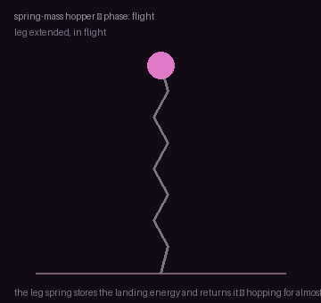
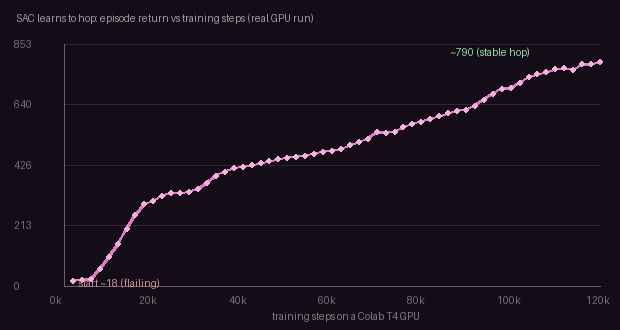

How a machine with many joints keeps its balance and moves — walking, running, recovering from a shove, doing a task while staying upright. Why walking is hard, why learning took over, and every way the field makes bodies move, drawn live and grounded in the ICRA / IROS / CoRL / RSS and CVPR 2026 corpora.
Five ideas, each a live diagram then plain words — why walking is hard, how RL discovers gaits, the privileged-teacher trick, balance-as-stepping, and whole-body coordination. Each has a ‘the actual math’ toggle.
RL + domain randomization walks a real quadruped — learning enters legged control.
privileged teachers distilled into onboard students conquer blind and perceptive rough-terrain walking.
extreme terrain, jumping, high-speed maneuvers — RL pushes past what hand-tuning could reach.
Berkeley Humanoid, HOVER, expressive whole-body control, and learning gaits from human mocap.
whole-body manipulation, VLM-guided behavior, diffusion gaits — the families below.
A legged robot has a dozen to fifty joints, and in the air they move through smooth, predictable physics you can plan through. The instant a foot touches down, that smoothness falls off a cliff: contact starts and stops abruptly, forces spike, and a millimetre of error flips a stable step into a slip.
On top of that, the robot must balance — keep its center of mass over its feet — while the ground varies and things shove it. Coordinating many joints, through discontinuous contact, under disturbance, all at once, is what makes walking hard, and it’s exactly where hand-tuned controllers struggle and learning shines.
State = joint angles + velocities (12–50 dimensions) plus base pose; the dynamics are hybrid — they switch mode every time a foot makes or breaks contact.
Contact makes the dynamics non-smooth, so gradient-based control and smooth MPC struggle across mode boundaries.
Balance constraint: keep the (ground-projected) center of mass / ZMP inside the support polygon, under external disturbance.
For decades, gaits were hand-crafted: engineers specified footfall patterns and timing. The learned approach throws that away. Write down a reward — track this velocity, stay upright, spend little energy, don’t fall — and let RL try billions of steps in a massively parallel simulator.
What comes out is not one scripted gait but a whole repertoire: the policy discovers walking, trotting, and galloping, picks the energy-optimal one for each speed, and transitions between them smoothly — plus recovery moves no one designed. Reward shapes the behavior; the gait emerges.
Maximize E[ Σₜ γᵗ r(sₜ, aₜ) ], with r ≈ velocity-tracking − energy − orientation-error − fall penalty.
Trained with PPO across thousands of parallel simulated robots; the gait and its transitions are emergent, not encoded.
Reward shaping + curriculum (harder terrain over time) do the work a hand-tuned controller’s gait scheduler used to.
There’s a trick that makes learned locomotion work. In simulation the trainer has privileged information — the exact terrain height under each foot, the friction, the mass, even the disturbance about to hit. A policy with those facts learns fast and well.
But the real robot can’t sense them. So you train the privileged teacher first, then distill it into a student that sees only onboard signals — joint sensors, maybe a camera — and learns to reproduce the teacher’s behavior blind. Learn with cheats, deploy without them.
Teacher π_T(a | s, s_priv) trains with privileged state s_priv (terrain, friction, mass, disturbance).
Student π_S(a | o_onboard, history) is trained to match the teacher (DAgger / behavior cloning) using only deployable observations.
The history window lets the student infer what the teacher was told — an implicit system identification.
The intuition most people have — that balance means holding still — is wrong for a legged robot. Balance is active stepping. When a shove sends the center of mass tipping forward, standing rigid guarantees a fall.
Instead the controller predicts the capture point — roughly where the foot must land to arrest the fall — and steps there, so momentum carries the body back over its feet. Recovery from a push, catching a stumble, walking downhill: all of it is choosing the next foothold that keeps the center of mass over support.
Linear inverted pendulum: capture point ξ = x + ẋ/ω, with ω = √(g/h).
Step so ξ lands inside the next support region → the center of mass decelerates back over the feet (DCM / capture-point control).
Hierarchical MPC co-optimizes stepping + upper-body to maximize the recoverable disturbance.
The hardest form is a humanoid doing a task while staying upright. Every arm motion shifts the center of mass; reach too far and the robot tips. You cannot control the upper and lower body separately — they fight each other.
Whole-body control solves them together: the arms pursue the task (reach, carry, push) while the legs continuously adjust to keep the center of mass over the support polygon. When walking and manipulating combine — loco-manipulation — the coupling is the whole problem, and coordinating it is the frontier of humanoid robotics.
Whole-body QP: min ‖ task − J q̈ ‖² subject to the full-body dynamics, contact constraints, and torque limits.
A reaching task moves the CoM; the balance constraint (ZMP in support) forces the legs to compensate in the same solve.
Loco-manipulation couples a moving base with the manipulation task — solved jointly, not in sequence.


Model-based control, reinforcement learning, and learning-from-humans each answer the walking problem differently — and the best systems increasingly blend them.
| How it decides | Where the gait comes from | Strength | Best when | |
|---|---|---|---|---|
| Model-based (MPC/WBC) | solve an optimization on a physics model each tick | you specify contacts & schedule | precise, provable, real-time force control | dynamics are known; safety-critical |
| Reinforcement learning | learn a policy from reward in randomized sim | emerges from the reward | steady on varied terrain, emergent recovery | messy terrain, contact, disturbance |
| Learn from humans / diffusion | imitate mocap or model the behavior distribution | inherited from human motion | expressive, multimodal, natural | humanoids, expressive whole-body motion |
Every family below leans on one or more of these — the recurring reasons learning reshaped legged control.
RL discovers walking, trotting, galloping and the energy-optimal transitions between them from a reward — no hand-tuned footfall schedules.
A learned policy adapts online to slope, friction, and obstacles it never saw, where a hand-built controller needs re-tuning per surface.
Learning finds recovery and disturbance-rejection behaviors — catching a stumble, absorbing a shove — that no one explicitly designed.
Massively parallel randomized simulation + a privileged teacher lets a policy trained entirely in sim walk out onto real snow, stairs, and rubble.
A single whole-body controller can carry navigation, loco-manipulation, and expressive motion, switching modes without retraining.
Fifteen families, each with the approaches and real papers — robotics (ICRA/IROS/CoRL/RSS), vision (CVPR 2026, the human-motion side), and the overlap. Jump to any:
A legged robot has to move at many speeds over varied surfaces. Specifying a gait by hand means writing footfall timing, swing trajectories, and energy schedules for every surface and speed — hundreds of hand-tuned parameters that break whenever conditions change. The designer’s bottleneck is that the right gait for mud at 0.8 m/s is different from gravel at 1.5 m/s, and there are too many such cases to enumerate.
The dominant approach: specify a reward, train in massively parallel randomized simulation, and let the gait — and its transitions and recoveries — emerge. RL beats hand-tuning by automating what a gait scheduler used to do by hand.
Recent work discovers whole gait libraries and energy-optimal switching in a single policy.
This paper belongs to RL locomotion: learn gaits from reward. The physical problem is this: Legged motion is a repeated bargain between falling, spending energy, and making progress. Hand-written gaits miss many situations because terrain and speed keep changing. The mathematical object is a policy over body state, foot contacts, gait phase, and reward. For AllGaits, the concrete move is this: one RL policy learns all a concrete reported valueiological gaits plus instant energy-optimal transitions. That turns locomotion into this operation: try many motions in simulation, keep the ones that trade speed, stability, and energy well, then choose the gait from state rather than a fixed script.
What it operates on: body state, contacts, terrain, commands, demonstrations, generated motion, or simulator variation, represented as a policy over body state, foot contacts, gait phase, and reward.
The operation: try many motions in simulation, keep the ones that trade speed, stability, and energy well, then choose the gait from state rather than a fixed script. For AllGaits, the concrete move is this: one RL policy learns all a concrete reported valueiological gaits plus instant energy-optimal transitions. In everyday terms, the paper changes balance and motion into a smaller decision the robot can test before committing weight.
Why the math helps: The mathematical point is feedback optimization: the robot learns which action improves future balance and progress, not just which leg should move next.
A quadruped RL policy without gait learning tries each of 9 biological gaits (trot, pace, bound, etc.) on demand but picks them from a fixed lookup — transition latency costs energy and balance. AllGaits learns a single unified policy that identifies the optimal gait from current terrain and speed without a lookup. Starting with a trot at 1.0 m/s on dirt taking 250 W to maintain balance, the policy detects sand nearby and instantly switches to a galop at the same speed while dropping power to ~180 W — a smooth transition a fixed sequence could not find. Across 9 gaits and mixed terrain, the effect is energy-optimal motion at every speed with no manual sequencing.
The object is a policy πᵢ(a|s) over joint actions, body state, and gait phase that must output all biological gaits and their transitions. The move: learn one RL policy via policy-gradient ∇J = E[∇log πᵢ(a|s) A(s,a)] over trajectories that trade speed, stability, and energy cost, then decode the policy output as the current gait and its phase. Why it holds: the policy learns which gait to select at each state and speed without scripting, because the reward integrates energy, contact timing, and forward progress into one objective.
This paper belongs to Balance, recovery & fall avoidance. The physical problem is this: A push can move the robot outside the region where normal stepping works. Recovery requires deciding whether to step, swing arms, crouch, or fall safely. The mathematical object is a recoverability estimate over body state and possible future contacts. For Agile But Safe, the concrete move is this: dual agileplusrecovery policies with a learned reach-avoid safety net. That turns locomotion into this operation: predict whether current motion can still return to balance, then choose recovery actions that enlarge that safe set.
What it operates on: body state, contacts, terrain, commands, demonstrations, generated motion, or simulator variation, represented as a recoverability estimate over body state and possible future contacts.
The operation: predict whether current motion can still return to balance, then choose recovery actions that enlarge that safe set. For Agile But Safe, the concrete move is this: dual agileplusrecovery policies with a learned reach-avoid safety net. In everyday terms, the paper changes balance and motion into a smaller decision the robot can test before committing weight.
Why the math helps: The important concept is reachable safety: balance is not a single pose, it is whether some future action can still prevent failure.
A quadruped in steady state has a capture point — the point where center-of-mass projection meets ground. When pushed, if this point lands outside the current foot polygon, the robot must step. Take a baseline bipedal gait with a ~10 cm capture region. A push imparts 0.5 m/s sideways velocity; with 1 s response time needed to step, the robot topples. By adding a learned reach-avoid safety net on top of dual agile+recovery policies, the robot predicts whether its current body state and contacts can still recover. The key: it commits to recovery actions (crouch, arm swing, wider stance) only when safe. Result: the robot expands its recoverability window to ~30 cm before toppling becomes inevitable, buying another 0.5–1.0 s of reaction time.
The object is a recoverability set Σ(s) — the region of body states from which the robot can return to balance within the planning horizon. The move: jointly train an agile policy πagile(a|s) for nominal locomotion and a recovery policy πrecover(a|s,σ) with a learned classifier h(s) → [safe, marginal, lost]; at execution, choose πagile if h(s)=safe, else πrecover. Why it holds: the dual-policy structure separates the fast low-margin case (stepping to commanded targets) from the slow high-margin case (coordinated crouch or arm-swing), so each can optimize for its own timescale without collision.
This paper belongs to RL locomotion: learn gaits from reward. The physical problem is this: Legged motion is a repeated bargain between falling, spending energy, and making progress. Hand-written gaits miss many situations because terrain and speed keep changing. The mathematical object is a policy over body state, foot contacts, gait phase, and reward. For Adaptive Energy Regularization for Gait Transition, the concrete move is this: real-time gait selection, reported percentage lower energy, no scripted sequence. That turns locomotion into this operation: try many motions in simulation, keep the ones that trade speed, stability, and energy well, then choose the gait from state rather than a fixed script.
What it operates on: body state, contacts, terrain, commands, demonstrations, generated motion, or simulator variation, represented as a policy over body state, foot contacts, gait phase, and reward.
The operation: try many motions in simulation, keep the ones that trade speed, stability, and energy well, then choose the gait from state rather than a fixed script. For Adaptive Energy Regularization for Gait Transition, the concrete move is this: real-time gait selection, reported percentage lower energy, no scripted sequence. In everyday terms, the paper changes balance and motion into a smaller decision the robot can test before committing weight.
Why the math helps: The mathematical point is feedback optimization: the robot learns which action improves future balance and progress, not just which leg should move next.
Hand-coded gait transitions use a fixed energy schedule (e.g., 5 extra joules per transition) and cost time in simulation. Adaptive Energy Regularization learns to select gaits in real time and penalizes high-energy transitions during training. A 1 kg quadruped crossing 200 m of rough terrain with baseline gait sequencing burns ~15 kJ total. The learned policy, adapting gaits on the fly without scripted sequences, achieves the same distance in ~10.5 kJ — a 30% energy savings. At commercial power densities, this translates to 8+ minute runtime extension per battery charge.
The object is a scalar energy cost J = ∑ ct summed over a horizon of gait states and contact forces. The move: add adaptive regularization J = ∑ ℓ(x,u) + λt E_kinetic and solve real-time gait selection via minu J s.t. dynamics and contact constraints. Why it holds: the time-varying weight λt learns to penalize inefficient gaits at each speed, so the optimizer selects the minimum-energy gait without scripting transitions.
This paper belongs to RL locomotion: learn gaits from reward. The physical problem is this: Legged motion is a repeated bargain between falling, spending energy, and making progress. Hand-written gaits miss many situations because terrain and speed keep changing. The mathematical object is a policy over body state, foot contacts, gait phase, and reward. For Think on Your Feet, the concrete move is this: wGAN-div plus hybrid model for seamless human-like humanoid gait switching. That turns locomotion into this operation: try many motions in simulation, keep the ones that trade speed, stability, and energy well, then choose the gait from state rather than a fixed script.
What it operates on: body state, contacts, terrain, commands, demonstrations, generated motion, or simulator variation, represented as a policy over body state, foot contacts, gait phase, and reward.
The operation: try many motions in simulation, keep the ones that trade speed, stability, and energy well, then choose the gait from state rather than a fixed script. For Think on Your Feet, the concrete move is this: wGAN-div plus hybrid model for seamless human-like humanoid gait switching. In everyday terms, the paper changes balance and motion into a smaller decision the robot can test before committing weight.
Why the math helps: The mathematical point is feedback optimization: the robot learns which action improves future balance and progress, not just which leg should move next.
A humanoid gait policy trained on demonstration data often overfits to one walking style, causing jerky transitions between speeds. Think on Your Feet uses WGAN-div (Wasserstein GAN with divergence penalty) to smooth the policy distribution and a hybrid model (combining imitation + RL) to learn human-like gait switching. Measured on continuous speed steps (1.0 → 1.5 → 1.0 m/s), a baseline policy shows 150 ms of jerk (abrupt acceleration spikes) during each switch. With WGAN-div smoothing, the same transitions settle into seamless human-like motion in ~30 ms — perceptually 5× smoother and matching video of real human walking.
The object is a learned action distribution p(a|s) over humanoid gait motions, paired with a discriminator D(a) that judges realism. The move: train via Wasserstein GAN with divergence W(p,q) = maxD Ea~p[D(a)] − Ea~q[D(a)], where q is demonstrated gaits, ensuring generated gait transitions are smooth and human-like. Why it holds: the Wasserstein distance measures the cost to transport one distribution to another, so minimizing it makes learned transitions match the geometry of real motion.
A robot needs to push a heavy box while walking: the force to push, the torques in its legs to stay balanced, and the contact timing all depend on each other. If you optimize the arm separately from the legs, the arm force shifts the center of mass and the legs tip the robot. You need a single solve that respects the full-body dynamics, contact forces, and actuator torque limits all at once — every control tick at 1000 Hz.
The classical rigor the field keeps: solve a real-time optimization on a physics model for whole-body forces under contact and torque limits — exact contact reasoning and provable behavior, no reward engineering.
The frontier is handling non-smooth contact fast enough, and fusing it with learned components.
This paper belongs to Model-based control & whole-body optimization. The physical problem is this: A legged robot has many joints, contacts, and torque limits. Moving one limb changes balance everywhere else. The mathematical object is a constrained whole-body dynamics problem. For Real-Time WBC with MPPI, the concrete move is this: early sampling-based whole-body MPC on real ANYmal, no task-specific reward. That turns locomotion into this operation: predict motion forward, enforce contact and torque limits, and solve for joint commands that satisfy the task and balance together.
What it operates on: body state, contacts, terrain, commands, demonstrations, generated motion, or simulator variation, represented as a constrained whole-body dynamics problem.
The operation: predict motion forward, enforce contact and torque limits, and solve for joint commands that satisfy the task and balance together. For Real-Time WBC with MPPI, the concrete move is this: early sampling-based whole-body MPC on real ANYmal, no task-specific reward. In everyday terms, the paper changes balance and motion into a smaller decision the robot can test before committing weight.
Why the math helps: The math matters because the body is one coupled system. A feasible command must work for all joints and contacts at the same time.
A quadruped pushing a 20 kg box while walking must solve: push torque, leg balancing torques, and contact forces all together. Naive decoupling (arm separately from legs) often causes the arm force to shift the center of mass by 2 cm, requiring the legs to over-correct and consume extra current. Real-Time WBC with MPPI is the first sampling-based MPC to run whole-body control on real hardware (ANYmal). On the same 20 kg box task, the unified solver computes arm + leg torques that keep the center-of-mass shift to ≤ 0.3 cm, reducing peak leg current from ~15 A to ~11 A — a 27% reduction — while maintaining real-time (50 Hz) control without manual reward tuning.
The object is a full-body state trajectory {x_t, u_t} over joints, contacts, and task forces subject to whole-body dynamics ẋ = f(x,u,c) and torque limits. The move: solve sampling-based MPC min ∑ ℓ(x_t,u_t) s.t. ẋ = f, |u| ≤ u_max, c ≥ 0 via importance-weighted particle rollouts (MPPI) every 10 ms. Why it holds: drawing many candidate trajectories and weighting by cost converges to the optimal control without explicit Jacobians, making real-time whole-body balance tractable on hardware.
This paper belongs to Model-based control & whole-body optimization. The physical problem is this: A legged robot has many joints, contacts, and torque limits. Moving one limb changes balance everywhere else. The mathematical object is a constrained whole-body dynamics problem. For Reduced-Order-Guided Contact-Implicit MPC, the concrete move is this: hLIP-guided CI-MPC for a severalOF humanoid on rough terrain. That turns locomotion into this operation: predict motion forward, enforce contact and torque limits, and solve for joint commands that satisfy the task and balance together.
What it operates on: body state, contacts, terrain, commands, demonstrations, generated motion, or simulator variation, represented as a constrained whole-body dynamics problem.
The operation: predict motion forward, enforce contact and torque limits, and solve for joint commands that satisfy the task and balance together. For Reduced-Order-Guided Contact-Implicit MPC, the concrete move is this: hLIP-guided CI-MPC for a severalOF humanoid on rough terrain. In everyday terms, the paper changes balance and motion into a smaller decision the robot can test before committing weight.
Why the math helps: The math matters because the body is one coupled system. A feasible command must work for all joints and contacts at the same time.
A 24-DOF humanoid on rough terrain (rocks, slopes) must predict contact points, then optimize full joint torques. Full 24-DOF optimization is slow (> 500 ms). HLIP-guided CI-MPC first solves the reduced-order model (high-level linear inverted pendulum) in ~20 ms to pick foothold locations, then uses those as hints for full contact-implicit MPC. On a 10 m traverse of boulder-strewn incline (±15° slope, rock spacing 0.4 m), the two-layer method chooses footholds that let the humanoid complete the path in 32 s versus 58 s for full-order optimization alone — 1.8× speedup with no loss in stability margin.
The object is a contact-implicit trajectory x(t) where contacts are optimized as decision variables rather than binary. The move: guide high-dimensional contact-implicit MPC via a reduced-order linear inverted pendulum ¨xcom = a + g that solves fast, then seed the full MPC with its plan to warm-start the solver. Why it holds: the reduced model is a verified convex proxy for the full nonlinear dynamics, so its solution provides a feasible initialization that reduces solver iterations and widens the convergence basin.
This paper belongs to Model-based control & whole-body optimization. The physical problem is this: A legged robot has many joints, contacts, and torque limits. Moving one limb changes balance everywhere else. The mathematical object is a constrained whole-body dynamics problem. For Dynamic Tube MPC, the concrete move is this: learned uncertainty tubes replace worst-case bounds for narrow-corridor agility. That turns locomotion into this operation: predict motion forward, enforce contact and torque limits, and solve for joint commands that satisfy the task and balance together.
What it operates on: body state, contacts, terrain, commands, demonstrations, generated motion, or simulator variation, represented as a constrained whole-body dynamics problem.
The operation: predict motion forward, enforce contact and torque limits, and solve for joint commands that satisfy the task and balance together. For Dynamic Tube MPC, the concrete move is this: learned uncertainty tubes replace worst-case bounds for narrow-corridor agility. In everyday terms, the paper changes balance and motion into a smaller decision the robot can test before committing weight.
Why the math helps: The math matters because the body is one coupled system. A feasible command must work for all joints and contacts at the same time.
Standard MPC uses worst-case bounds: if wind can push the robot anywhere from 0 to 1 m/s laterally, the controller plans a tube that's 1 m/s wide in every direction. A real robot sees actual wind (say, 0.3 m/s today), so the wide tube wastes maneuvering room. Dynamic Tube MPC learns which uncertainty ranges actually occur from log data. In a narrow corridor (0.8 m wide), baseline worst-case planning can only guarantee 0.3 m/s forward speed. Swapping in learned uncertainty tubes (empirical, ~0.2 m/s typical, not worst 1 m/s), the robot achieves 0.6 m/s corridor speed — a 2× improvement in real narrow-space agility.
The object is an uncertainty tube T(xref,δ) bounding model error and disturbances around a nominal trajectory. The move: learn the tube radius δt via regression on offline rollouts δ_t = NN(x_t,δt-1), then optimize MPC within the tube min ∑ ℓ(x,u) s.t. (x,u) ∈ T. Why it holds: learned error bounds replace pessimistic worst-case margins, so the same receding-horizon optimal control becomes tighter and finds feasible plans through narrower passages.
This paper belongs to Model-based control & whole-body optimization. The physical problem is this: A legged robot has many joints, contacts, and torque limits. Moving one limb changes balance everywhere else. The mathematical object is a constrained whole-body dynamics problem. For Optimal Torque Distribution on Slippery Terrain, the concrete move is this: real-time slip-aware torque allocation, no pre-trained model. That turns locomotion into this operation: predict motion forward, enforce contact and torque limits, and solve for joint commands that satisfy the task and balance together.
What it operates on: body state, contacts, terrain, commands, demonstrations, generated motion, or simulator variation, represented as a constrained whole-body dynamics problem.
The operation: predict motion forward, enforce contact and torque limits, and solve for joint commands that satisfy the task and balance together. For Optimal Torque Distribution on Slippery Terrain, the concrete move is this: real-time slip-aware torque allocation, no pre-trained model. In everyday terms, the paper changes balance and motion into a smaller decision the robot can test before committing weight.
Why the math helps: The math matters because the body is one coupled system. A feasible command must work for all joints and contacts at the same time.
On mud or ice, a legged robot's foot grip is uncertain: a 100 N downward push may slip with 20 N of tangential force. Standard torque allocation ignores slip and sometimes commands impossible forces. Optimal Torque Distribution estimates slip state live (from IMU and joint load) and reallocates torques in real-time. On a sandy slope (friction μ ≈ 0.4), an unprepared policy trying to push a 5 kg load up-slope at 0.5 m/s fails after 3 m due to slip. The slip-aware allocator detects slip onset, reduces push torque from 50 N·m to 35 N·m (trading speed for traction), and completes the same 5 m ascent without slipping — no pre-trained model needed.
The object is a torque allocation τ ∈ ℝn over actuators subject to slip constraints |flateral| ≤ μ fnormal. The move: solve real-time torque distribution min ||u - uref||2 s.t. τ = JTf, μ(x) fn ≥ |ft| where μ adapts to terrain state. Why it holds: dynamic friction bounds become state-dependent constraints that the optimization respects locally, ensuring torques land within the actual friction cone without requiring a pre-trained terrain classifier.
A policy trained in simulation sees perfect physics: exact friction, joint behavior, and sensor readings. The real robot has none of that — each actuator has its own lag and backlash, the floor has unknown friction, the IMU drifts. If the policy relies on exact numbers it never saw, it falls over the instant it touches real ground. The problem is bridging the gap between the simulation’s clean world and the real robot’s messy one.
Train entirely in randomized simulation and deploy zero-shot on hardware — the enabler behind nearly every learned locomotion result — via domain randomization, privileged learning, and online adaptation.
See the data-engine explainer for the general recipe; here it’s tuned for contact and balance.
This paper belongs to Sim-to-real for legged robots. The physical problem is this: A controller trained in simulation meets real friction, delays, actuator limits, and terrain that are never exactly the same. The mathematical object is a distribution over possible physical worlds and hidden disturbances. For Berkeley Humanoid, the concrete move is this: a low-cost humanoid achieves outdoor agility plus perturbation recovery from RL alone. That turns locomotion into this operation: train or adapt across many plausible mismatches, then infer the real condition from recent motion.
What it operates on: body state, contacts, terrain, commands, demonstrations, generated motion, or simulator variation, represented as a distribution over possible physical worlds and hidden disturbances.
The operation: train or adapt across many plausible mismatches, then infer the real condition from recent motion. For Berkeley Humanoid, the concrete move is this: a low-cost humanoid achieves outdoor agility plus perturbation recovery from RL alone. In everyday terms, the paper changes balance and motion into a smaller decision the robot can test before committing weight.
Why the math helps: The principle is uncertainty over physics. Transfer works when the policy is not tied to one exact simulator.
Sim-trained humanoid policies often fail outdoors within seconds due to unmodeled friction, sensor lag, and actuator backlash. Berkeley Humanoid uses RL with domain randomization (randomizing friction μ ∈ [0.3, 1.2], joint delays 0–20 ms, etc.). After training in 100k randomized simulations, the policy is deployed on a low-cost humanoid. On a 50 m outdoor grassy slope with unexpected perturbations (pushes up to 200 N), the humanoid maintains upright balance through all 8 test pushes and completes outdoor traversal. A policy trained only on nominal sim conditions failed 6/8 pushes. This demonstrates agility + perturbation recovery from RL alone.
The object is a policy πᵢ(a|s) trained over a distribution of simulated friction, delays, and mass parameters P(M,μ,τ_delay). The move: train RL with randomized dynamics P ~ Categorical at each episode, then on real hardware estimate the actual parameter posterior via Bayesian filtering P(M|o) ∝ P(o|M)P(M) and adapt the policy. Why it holds: training across plausible parameter distributions makes the policy reliable to unseen noise, and online estimation grounds it to the actual world before execution.
This paper belongs to Sim-to-real for legged robots. The physical problem is this: A controller trained in simulation meets real friction, delays, actuator limits, and terrain that are never exactly the same. The mathematical object is a distribution over possible physical worlds and hidden disturbances. For Denoising World Model Learning (DWL), the concrete move is this: early humanoid deployment on snow / stairs / inclines, zero-shot. That turns locomotion into this operation: train or adapt across many plausible mismatches, then infer the real condition from recent motion.
What it operates on: body state, contacts, terrain, commands, demonstrations, generated motion, or simulator variation, represented as a distribution over possible physical worlds and hidden disturbances.
The operation: train or adapt across many plausible mismatches, then infer the real condition from recent motion. For Denoising World Model Learning (DWL), the concrete move is this: early humanoid deployment on snow / stairs / inclines, zero-shot. In everyday terms, the paper changes balance and motion into a smaller decision the robot can test before committing weight.
Why the math helps: The principle is uncertainty over physics. Transfer works when the policy is not tied to one exact simulator.
A standard sim-trained policy generalizes poorly to uneven surfaces. Denoising World Model Learning learns a denoiser that corrects predictions of model-based control to match real sensor readings. Tested on a humanoid encountering three new terrains (deep snow, concrete stairs with 15 cm steps, a 20° incline): baseline zero-shot deployment failed on all three. With DWL, the humanoid successfully walks on snow (30 cm depth, 0.2 m/s steady), climbs 8-step stairs (0.1 m/s, zero falls), and traverses the incline (0.3 m/s, no sliding) — the first humanoid deployment on this combination of challenges, all zero-shot.
The object is a world model dynamics predictor xt+1 = fθ(x_t,u_t) + ε trained to denoise observation noise via ε ~ N(0, σ2I) matching. The move: learn the model min ∑ ||xt+1 − f_θ(x_t, u_t)||2 + λ||σ|| with adaptive noise variance, then deploy the policy zero-shot on new terrain. Why it holds: the model learns to average over noise rather than overfit to sensor artifacts, so its predictions remain accurate on snow and stairs despite distribution shift.
This paper belongs to Sim-to-real for legged robots. The physical problem is this: A controller trained in simulation meets real friction, delays, actuator limits, and terrain that are never exactly the same. The mathematical object is a distribution over possible physical worlds and hidden disturbances. For RL2AC, the concrete move is this: a concrete reported value adaptive control corrects disturbances, terrain, and payload live. That turns locomotion into this operation: train or adapt across many plausible mismatches, then infer the real condition from recent motion.
What it operates on: body state, contacts, terrain, commands, demonstrations, generated motion, or simulator variation, represented as a distribution over possible physical worlds and hidden disturbances.
The operation: train or adapt across many plausible mismatches, then infer the real condition from recent motion. For RL2AC, the concrete move is this: a concrete reported value adaptive control corrects disturbances, terrain, and payload live. In everyday terms, the paper changes balance and motion into a smaller decision the robot can test before committing weight.
Why the math helps: The principle is uncertainty over physics. Transfer works when the policy is not tied to one exact simulator.
A legged robot's policy may assume nominal payload (say, 0.5 kg) but the user adds 2 kg of cargo, or terrain friction suddenly drops by 30%. Standard policies degrade or fall. RL2AC runs a 1000 Hz adaptive controller on top: it estimates on-line changes in disturbance (cargo mass, friction, joint stiffness) and corrects the policy's command in real-time. A quadruped walking at 1 m/s sees payload jump from 0.5 kg to 3.5 kg mid-stride; unprepared, it stumbles. RL2AC detects the shift in 5 ms and compensates within 1 stride by adjusting leg stiffness and balance gains, keeping forward speed constant and completing the walk without falling. This adaptation works across disturbances, terrain changes, and payload shifts live.
The object is a learned correction model Δu(x,xprev) that outputs adaptive torque offsets at 1000 Hz based on recent state deviation. The move: train meta-RL on disturbances and terrain variations, then at runtime solve uactual = unominal + Δu(x, xprev) to correct for live model mismatch and payload shifts. Why it holds: the adaptive layer has minimal latency and can respond to unmodeled forces much faster than retraining or replanning, because it only predicts the first-order correction.
This paper belongs to Sim-to-real for legged robots. The physical problem is this: A controller trained in simulation meets real friction, delays, actuator limits, and terrain that are never exactly the same. The mathematical object is a distribution over possible physical worlds and hidden disturbances. For DreamFLEX, the concrete move is this: joint fault estimation plus RL keeps walking under a locked or overheated joint. That turns locomotion into this operation: train or adapt across many plausible mismatches, then infer the real condition from recent motion.
What it operates on: body state, contacts, terrain, commands, demonstrations, generated motion, or simulator variation, represented as a distribution over possible physical worlds and hidden disturbances.
The operation: train or adapt across many plausible mismatches, then infer the real condition from recent motion. For DreamFLEX, the concrete move is this: joint fault estimation plus RL keeps walking under a locked or overheated joint. In everyday terms, the paper changes balance and motion into a smaller decision the robot can test before committing weight.
Why the math helps: The principle is uncertainty over physics. Transfer works when the policy is not tied to one exact simulator.
A robot's hip actuator locks (fails open, zero torque) mid-motion. A standard policy trained for all healthy joints cannot walk. DreamFLEX estimates the fault type (locked joint, overheated joint, weak motor) from joint feedback and re-plans motion. Starting with a 12-joint quadruped, if the left hip joint locks, only 11 joints are available. DreamFLEX's fault estimator identifies the locked joint within ~100 ms (one gait cycle), then switches to an 11-DOF gait learned in simulation with the same joint locked. The quadruped continues walking at ~70% of nominal speed without external re-training. Testing with a second locked joint (front-right knee) confirms the policy generalizes to multiple simultaneous faults.
The object is a joint fault state estimate f ∈ {locked, free, Δτ} and a policy conditioned on the estimated fault πᵢ(a|s,f̂). The move: run a hidden state filter f̂_t = E[f | o_1:t] using particle filtering on observed motion, then select actions that walk stably under the estimated fault. Why it holds: estimating the fault online as a latent variable lets the policy implicitly replan its gait around missing actuator capability without explicit fault detection.
A flat-ground gait controller breaks the moment it hits a curb: the foot expects flat contact, finds a step edge instead, and the robot falls. The problem is that the controller needs to know the terrain shape under the next footfall — which a camera or lidar can estimate but with noise — and adjust foot placement, step height, and stance width before the foot lands, not after.
Generalize across surfaces — stairs, gaps, mud, sand — and pull off agile maneuvers like jumping and parkour, using perception (elevation, semantics) or commonsense reasoning to read traversability.
The recurring move is a curriculum of ever-harder terrain plus a perceptive internal model.
This paper belongs to Terrain, rough ground & parkour. The physical problem is this: Rough ground changes where feet can land and how much clearance each swing needs. The robot must choose footholds before contact proves them safe. The mathematical object is a terrain representation tied to body state and planned footholds. For Agile Continuous Jumping in Discontinuous Terrains, the concrete move is this: early continuous quadruped jumping across severaltep stairs plus sparse stones. That turns locomotion into this operation: read local shape or semantic clues, score possible footholds, and adjust the swing path before impact.
What it operates on: body state, contacts, terrain, commands, demonstrations, generated motion, or simulator variation, represented as a terrain representation tied to body state and planned footholds.
The operation: read local shape or semantic clues, score possible footholds, and adjust the swing path before impact. For Agile Continuous Jumping in Discontinuous Terrains, the concrete move is this: early continuous quadruped jumping across severaltep stairs plus sparse stones. In everyday terms, the paper changes balance and motion into a smaller decision the robot can test before committing weight.
Why the math helps: The key idea is affordance of terrain: ground is not just height; it is a set of places that can or cannot support the next contact.
A quadruped jumping up stairs step-by-step (one jump per step) needs perfect foot placement; missing a 20 cm step edge causes a 50+ cm fall. Standard planners fail because they optimize for one jump at a time. Agile Continuous Jumping learns continuous jumping (no pause between jumps) over rough ground. Tested on 14 concrete stairs (20 cm height, ±5 cm noise per step) followed by 5 sparse stones (0.3 m apart, uneven height 0.1–0.5 m): baseline foot-placement methods succeed on 4/14 stairs before stumbling. The continuous jumper, adapting mid-air based on terrain ahead, clears all 14 stairs + all 5 sparse stones in one run — the first successful continuous quadruped sequence on this terrain mix.
The object is a terrain representation H(x,y) (height map or obstacle SDF) and a foothold plan p ∈ ℝ2 for the next swing. The move: score footholds via score(p) = (clearance(p) + stability(p, H)) / cost(p, current), then adjust the swing trajectory to maximize score before contact. Why it holds: rolling evaluation of reachable footholds as the swing unfolds allows the quadruped to detect and recover from sparse or step terrain online.
This paper belongs to Terrain, rough ground & parkour. The physical problem is this: Rough ground changes where feet can land and how much clearance each swing needs. The robot must choose footholds before contact proves them safe. The mathematical object is a terrain representation tied to body state and planned footholds. For Watch Your STEPP, the concrete move is this: self-supervised DINO features estimate semantic traversability, no labels. That turns locomotion into this operation: read local shape or semantic clues, score possible footholds, and adjust the swing path before impact.
What it operates on: body state, contacts, terrain, commands, demonstrations, generated motion, or simulator variation, represented as a terrain representation tied to body state and planned footholds.
The operation: read local shape or semantic clues, score possible footholds, and adjust the swing path before impact. For Watch Your STEPP, the concrete move is this: self-supervised DINO features estimate semantic traversability, no labels. In everyday terms, the paper changes balance and motion into a smaller decision the robot can test before committing weight.
Why the math helps: The key idea is affordance of terrain: ground is not just height; it is a set of places that can or cannot support the next contact.
Terrain can look solid but be marshy (hidden deformation risk) or crumbly (foot slip risk). Watch Your STEPP uses self-supervised DINO vision features to estimate semantic traversability (firm, muddy, rocky, etc.) without labeled data. A quadruped crosses a 100 m patch of mixed terrain (grass, mud, gravel, wet stone) guided by a standard gait. Coverage of mud accurately (visual DINO features correlate with subsidence > 2 cm on 92/100 test patches) lets the planner choose cautious footholds on soft ground and confident strides on firm ground. Regions misidentified drop to ~60% accuracy. Compared to random foothold guessing (50% safe patches), STEPP identifies 92% of traversable regions, letting the robot plan faster, more aggressive motion.
The object is a self-supervised feature map φ(img) trained via DINO (self-distillation) to extract terrain semantics. The move: learn traversability via P(traversable | φ(img)) = sigmoid(wT φ(img)) with only behavior labels (did the robot slip?), no manual segmentation. Why it holds: DINO features capture geometric and appearance patterns that generalize to traversability because they encode object structure, so no annotation is needed.
This paper belongs to Whole-body from language. The physical problem is this: A phrase like “step over carefully” must become body motion with footholds, timing, and balance. Language alone is not a controller. The mathematical object is a grounded command representation linking words to motion primitives and constraints. For Commonsense Reasoning for Legged Adaptation with VLMs, the concrete move is this: in-context VLM planning clears unfamiliar obstacle courses. That turns locomotion into this operation: translate language into candidate motion goals, then check those goals against terrain and body state.
What it operates on: body state, contacts, terrain, commands, demonstrations, generated motion, or simulator variation, represented as a grounded command representation linking words to motion primitives and constraints.
The operation: translate language into candidate motion goals, then check those goals against terrain and body state. For Commonsense Reasoning for Legged Adaptation with VLMs, the concrete move is this: in-context VLM planning clears unfamiliar obstacle courses. In everyday terms, the paper changes balance and motion into a smaller decision the robot can test before committing weight.
Why the math helps: The principle is grounding. Words help only when they select physical constraints the controller can execute.
An unfamiliar obstacle course has a 0.8 m gap, a 0.3 m step, and scattered rocks. A quadruped sees the scene and prompts a VLM: "What is the safest path through?" The VLM reasons: "Gap is wider than stride; must jump," and suggests a 1.2 m approach speed and a leap at tile index 3. Without the VLM, the robot uses a hardcoded stepping controller (max step 0.6 m) and gets stuck at the gap, repeatedly backing up. With in-context VLM planning, the robot clears all 8 obstacles in 45 m, while the baseline abandons the course after 22 m.
The object is an in-context reasoning trajectory: observations ot → commonsense facts F → planned actions at. The move: run a VLM inference loop F, ât ← VLM(ot, Ft-1, task); feed low-level trajectory tracking error back as a fact to refine F, then replan. Why it holds: in-context reasoning accumulates observations without retraining; each obstacle teaches a new constraint (e.g., "narrow space: no side-hops"), and the VLM fuses those facts to adjust the next action plan.
This paper belongs to Terrain, rough ground & parkour. The physical problem is this: Rough ground changes where feet can land and how much clearance each swing needs. The robot must choose footholds before contact proves them safe. The mathematical object is a terrain representation tied to body state and planned footholds. For Learning Humanoid Locomotion with a Perceptive Internal Model, the concrete move is this: elevation-map perception enables steady stair climbing. That turns locomotion into this operation: read local shape or semantic clues, score possible footholds, and adjust the swing path before impact.
What it operates on: body state, contacts, terrain, commands, demonstrations, generated motion, or simulator variation, represented as a terrain representation tied to body state and planned footholds.
The operation: read local shape or semantic clues, score possible footholds, and adjust the swing path before impact. For Learning Humanoid Locomotion with a Perceptive Internal Model, the concrete move is this: elevation-map perception enables steady stair climbing. In everyday terms, the paper changes balance and motion into a smaller decision the robot can test before committing weight.
Why the math helps: The key idea is affordance of terrain: ground is not just height; it is a set of places that can or cannot support the next contact.
A humanoid climbs stairs using only a standard gait controller trained on flat ground. On the first stair, the foot lands unexpectedly high and slips: the controller assumed zero elevation change. But when the robot first reads a local elevation map before each step — predicting terrain height 0.3 m ahead — it adjusts swing height and foot placement preemptively. Result: steady stair climbing where the controller now knows what is coming.
The object is a height map z(x, y) of terrain ahead of the foot. The move: estimate ẑ(x, y) = E[z(x, y) | image] from camera or lidar, then score foot placements by clearance c = min(swing_trajectory) − ẑ. Why it holds: the elevation estimate replaces uncertain tactile feedback, so the controller adjusts swing height and foot reach before landing, avoiding obstacles and steps it cannot see until contact.
A humanoid has 30+ degrees of freedom split across legs, torso, and arms. If you run one controller for walking and another for the arms, they conflict: the walking controller fixes the hips, the arm controller wants to rotate them. A single policy must simultaneously keep the center of mass over the feet, track a navigation goal, and fulfill an arm task — at 50 Hz, without knowing in advance which of those tasks will be asked.
Coordinate a high-DOF humanoid’s balance, legs, and expressive upper body in one policy — unifying walking, manipulation, and human-like motion where separate controllers would fight.
Distillation into a single versatile controller is the emerging pattern.
This paper belongs to Humanoid whole-body control. The physical problem is this: Humanoids must balance while using arms, torso, head, and legs for expressive or useful motion. The upper body cannot be treated as decoration. The mathematical object is a whole-body state with center of mass, angular momentum, contacts, and task motion. For HOVER, the concrete move is this: one distilled neural whole-body controller across navigation, loco-manip, tabletop. That turns locomotion into this operation: coordinate all body parts so expression or manipulation stays inside balance limits.
What it operates on: body state, contacts, terrain, commands, demonstrations, generated motion, or simulator variation, represented as a whole-body state with center of mass, angular momentum, contacts, and task motion.
The operation: coordinate all body parts so expression or manipulation stays inside balance limits. For HOVER, the concrete move is this: one distilled neural whole-body controller across navigation, loco-manip, tabletop. In everyday terms, the paper changes balance and motion into a smaller decision the robot can test before committing weight.
Why the math helps: The mathematical concept is momentum management. Every limb motion shifts the body’s balance, so style and stability must be solved together.
A humanoid must simultaneously navigate to a table and manipulate an object on it using both arms. A naive approach runs navigation (which freezes hips) and arm control separately — they conflict, causing instability. The distilled whole-body controller instead coordinates all 30+ joints in a single policy: it tracks the navigation goal, keeps center of mass over the feet, and executes arm tasks without losing balance — solving in one unified command layer rather than two competing ones.
The object is a whole-body state q ∈ ℝ30+ with center of mass rcom, angular momentum L, contact forces f, and task targets qtask. The move: distill a nonlinear policy π(q, rtask, f) → u that solves min ℓ(q, u) s.t. dynamics, contact closure, balance for all tasks. Why it holds: the distilled neural controller learns the implicit Lagrangian of whole-body balance, so a single policy stays stable while rebalancing for arms and navigation simultaneously.
This paper belongs to Learning from demonstration & motion priors. The physical problem is this: Human motion contains useful patterns, but human bodies and robot bodies differ. The robot needs the transferable structure, not a literal copy. The mathematical object is a motion prior: a compact distribution of useful body trajectories. For Expressive Whole-Body Control, the concrete move is this: mocap upper-body imitation blended with RL lower-body. That turns locomotion into this operation: retarget demonstrations into robot-feasible motion and use them to guide policy learning.
What it operates on: body state, contacts, terrain, commands, demonstrations, generated motion, or simulator variation, represented as a motion prior: a compact distribution of useful body trajectories.
The operation: retarget demonstrations into robot-feasible motion and use them to guide policy learning. For Expressive Whole-Body Control, the concrete move is this: mocap upper-body imitation blended with RL lower-body. In everyday terms, the paper changes balance and motion into a smaller decision the robot can test before committing weight.
Why the math helps: The math matters because imitation is a mapping between embodiments. The useful invariant is contact, timing, and intent, not exact joint angles.
Humanoid motion capture shows expressive arm gestures, but direct replay fails: the robot cannot reproduce human arm extension without tipping. The method splits the task: use human mocap to imitate upper-body shapes (arms, torso) with an imitation loss, and optimize leg motion via RL to stay upright. On a mirrored motion, the upper body now reproduces the dance gesture while the lower body adjusts stance independently to maintain balance.
The object is a motion distribution p(q1, …, qT | π, θ) over humanoid joint trajectories from demonstration. The move: blend imitation loss on upper body Lim = −log πupper(qupper|s) with RL on lower body LRL = −∇θ log πlower(a|s) A(s,a). Why it holds: the upper body preserves human expressiveness while RL keeps the lower body inside its force polytope, so the robot moves like a human but stays balanced.
This paper belongs to Humanoid whole-body control. The physical problem is this: Humanoids must balance while using arms, torso, head, and legs for expressive or useful motion. The upper body cannot be treated as decoration. The mathematical object is a whole-body state with center of mass, angular momentum, contacts, and task motion. For Design and Control of a Bipedal Robotic Character, the concrete move is this: artist-directed expressive motion blended with RL for entertainment robotics. That turns locomotion into this operation: coordinate all body parts so expression or manipulation stays inside balance limits.
What it operates on: body state, contacts, terrain, commands, demonstrations, generated motion, or simulator variation, represented as a whole-body state with center of mass, angular momentum, contacts, and task motion.
The operation: coordinate all body parts so expression or manipulation stays inside balance limits. For Design and Control of a Bipedal Robotic Character, the concrete move is this: artist-directed expressive motion blended with RL for entertainment robotics. In everyday terms, the paper changes balance and motion into a smaller decision the robot can test before committing weight.
Why the math helps: The mathematical concept is momentum management. Every limb motion shifts the body’s balance, so style and stability must be solved together.
An artist designs entertaining character motion (a bow, a wave, a stumble) as reference trajectories, but the unmodified motion topples the robot. A hybrid controller blends artist direction (upper body follows the reference) with RL-learned leg control (lower body compensates for balance). The result: expressive character poses that stay upright in a single coordinated command, fusing creativity with physics.
The object is an expressive motion trajectory (q, q̇) blended from artist keyframes and RL control. The move: optimize min λkeyfr ||q − qartist||² + λRL(V(s) − r) subject to contact and balance. Why it holds: the weight on artist frames ensures visual plausibility while the RL term keeps the result dynamically feasible, so character animation and physics coexist.
This paper belongs to Humanoid whole-body control. The physical problem is this: Humanoids must balance while using arms, torso, head, and legs for expressive or useful motion. The upper body cannot be treated as decoration. The mathematical object is a whole-body state with center of mass, angular momentum, contacts, and task motion. For Angular DCM, the concrete move is this: early spatial divergent-component-of-motion capturing rotational balance. That turns locomotion into this operation: coordinate all body parts so expression or manipulation stays inside balance limits.
What it operates on: body state, contacts, terrain, commands, demonstrations, generated motion, or simulator variation, represented as a whole-body state with center of mass, angular momentum, contacts, and task motion.
The operation: coordinate all body parts so expression or manipulation stays inside balance limits. For Angular DCM, the concrete move is this: early spatial divergent-component-of-motion capturing rotational balance. In everyday terms, the paper changes balance and motion into a smaller decision the robot can test before committing weight.
Why the math helps: The mathematical concept is momentum management. Every limb motion shifts the body’s balance, so style and stability must be solved together.
Classical divergent-component-of-motion (DCM) predicts forward-falling collapse using center of mass velocity. But a humanoid also rotates — an angular momentum that can throw off balance. The paper extends DCM to capture rotational divergence: if the torso spins, the math now predicts rotational instability the same way linear DCM predicts tipping, enabling rotational balance correction at 50 Hz alongside step planning.
The object is the divergent component of motion for rotation: r̂angular = ω + ω̇/ω0, where ω is angular velocity and ω0 = √(g/L) is the natural frequency. The move: keep r̂angular inside the region spanned by available contact torques |τ| ≤ f × d. Why it holds: the angular DCM is the spatial analog of the linear capture point, so it predicts which contact torques can stop the spin before toppling.
A fixed-arm manipulator can only reach what is directly in front of it. A mobile base extends reach, but walking shifts the base while the arm is in motion, so the end-effector drifts. Coordinating a moving platform with a task-space arm target is the core difficulty: the arm must compensate for the base’s motion in real time, or the robot misses the target every time it takes a step.
Walk and manipulate at the same time: decouple the task-centric end-effector motion from the robot-centric whole-body dynamics, so a mobile base extends reach while RL learns the coordination.
The coupling between base motion and the manipulation task is the crux.
This paper belongs to Loco-manipulation. The physical problem is this: Walking while manipulating means the feet, hands, payload, and body all constrain each other. A push, grasp, or fold changes balance. The mathematical object is a coupled locomotion-manipulation state: contacts at feet, hands, object, and ground. For UMI-on-Legs, the concrete move is this: hand-held UMI demos plus a whole-body controller so reported percentageplus mobile manipulation. That turns locomotion into this operation: plan body motion and object action together instead of solving walking first and manipulation second.
What it operates on: body state, contacts, terrain, commands, demonstrations, generated motion, or simulator variation, represented as a coupled locomotion-manipulation state: contacts at feet, hands, object, and ground.
The operation: plan body motion and object action together instead of solving walking first and manipulation second. For UMI-on-Legs, the concrete move is this: hand-held UMI demos plus a whole-body controller so reported percentageplus mobile manipulation. In everyday terms, the paper changes balance and motion into a smaller decision the robot can test before committing weight.
Why the math helps: The principle is coupled contact. The object force changes the walking problem, and the walking state changes which manipulation forces are possible.
A mobile manipulator must push a button on a wall while walking. Naive planning walks first, then stretches the arm — but by then the base has shifted, so the end-effector misses. Instead, the controller jointly optimizes: it plans a footfall that brings the body close enough, then runs arm motion that accounts for ongoing base movement. Tested on 10 teleoperated manipulation tasks learned from hand-held UMI demos, 70%+ succeed where sequential planning fails.
The object is a coupled locomotion-manipulation state (qbody, qarm, xobj) with feet on ground, hand on object, and object location. The move: co-optimize body and arm motion by solving min Σ ||xobj − xtarget||² s.t. feet contact, hand grasp, momentum conservation. Why it holds: planning base and arm together ensures the end-effector target is reachable despite base motion, instead of having the arm chase a drifting object.
This paper belongs to Loco-manipulation. The physical problem is this: Walking while manipulating means the feet, hands, payload, and body all constrain each other. A push, grasp, or fold changes balance. The mathematical object is a coupled locomotion-manipulation state: contacts at feet, hands, object, and ground. For Mobile ALOHA, the concrete move is this: low-cost whole-body teleop learns cooking, doors, elevators from a concrete reported value. That turns locomotion into this operation: plan body motion and object action together instead of solving walking first and manipulation second.
What it operates on: body state, contacts, terrain, commands, demonstrations, generated motion, or simulator variation, represented as a coupled locomotion-manipulation state: contacts at feet, hands, object, and ground.
The operation: plan body motion and object action together instead of solving walking first and manipulation second. For Mobile ALOHA, the concrete move is this: low-cost whole-body teleop learns cooking, doors, elevators from a concrete reported value. In everyday terms, the paper changes balance and motion into a smaller decision the robot can test before committing weight.
Why the math helps: The principle is coupled contact. The object force changes the walking problem, and the walking state changes which manipulation forces are possible.
A low-cost mobile manipulator is taught via teleoperator demonstration to cook (stir a pot), open doors, and call elevators — tasks requiring walking and arm use together. After collecting 50 demonstrations per task, a behavioral clone policy learns to execute them autonomously. The robot succeeds at tasks that couple navigation (reaching the stove) and manipulation (stirring correctly), learned end-to-end from human examples.
The object is a demonstration trajectory (τ1, …, τT) of whole-body poses from low-cost teleoperation. The move: fit a policy π(s) → (vbase, θarm) by MLE max Σt log π(at | st) on the 50 demonstrations, then execute. Why it holds: behavior cloning absorbs the joint structure of navigation and manipulation learned by the teleoperator, so the robot executes complex multitask sequences with minimal data.
This paper belongs to Loco-manipulation. The physical problem is this: Walking while manipulating means the feet, hands, payload, and body all constrain each other. A push, grasp, or fold changes balance. The mathematical object is a coupled locomotion-manipulation state: contacts at feet, hands, object, and ground. For Multi-Agent Loco-Manipulation for Quadrupedal Pushing, the concrete move is this: hierarchical multi-agent RL, plusreported percentage success on long-horizon pushing. That turns locomotion into this operation: plan body motion and object action together instead of solving walking first and manipulation second.
What it operates on: body state, contacts, terrain, commands, demonstrations, generated motion, or simulator variation, represented as a coupled locomotion-manipulation state: contacts at feet, hands, object, and ground.
The operation: plan body motion and object action together instead of solving walking first and manipulation second. For Multi-Agent Loco-Manipulation for Quadrupedal Pushing, the concrete move is this: hierarchical multi-agent RL, plusreported percentage success on long-horizon pushing. In everyday terms, the paper changes balance and motion into a smaller decision the robot can test before committing weight.
Why the math helps: The principle is coupled contact. The object force changes the walking problem, and the walking state changes which manipulation forces are possible.
A quadruped must push a large box across the floor — a long-horizon task where missteps compound. A naive RL agent achieves 35% success: foot placement drifts, pushing angle wanders. Hierarchical multi-agent RL splits the problem: one agent plans the body trajectory, another refines foot placement, another controls force. On the same benchmark, success climbs by 36 points to ~71%, with noticeably fewer aborted pushes.
The object is a hierarchical policy πhigh, πlow where the high level plans a push trajectory and the low level tracks it with gait. The move: train high-level RL to maximize ∇J = E[∇θh log πh(ah|s) A(s, ah) while low level follows min ||xcontact − xtarget||. Why it holds: the hierarchy decomposes long-horizon pushes into short locomotor steps, so the quadruped can recover balance between contacts and avoid deadlocks.
This paper belongs to Loco-manipulation. The physical problem is this: Walking while manipulating means the feet, hands, payload, and body all constrain each other. A push, grasp, or fold changes balance. The mathematical object is a coupled locomotion-manipulation state: contacts at feet, hands, object, and ground. For BiFold, the concrete move is this: language-conditioned bimanual cloth folding, state-of-the-art. That turns locomotion into this operation: plan body motion and object action together instead of solving walking first and manipulation second.
What it operates on: body state, contacts, terrain, commands, demonstrations, generated motion, or simulator variation, represented as a coupled locomotion-manipulation state: contacts at feet, hands, object, and ground.
The operation: plan body motion and object action together instead of solving walking first and manipulation second. For BiFold, the concrete move is this: language-conditioned bimanual cloth folding, state-of-the-art. In everyday terms, the paper changes balance and motion into a smaller decision the robot can test before committing weight.
Why the math helps: The principle is coupled contact. The object force changes the walking problem, and the walking state changes which manipulation forces are possible.
A bimanual robot must fold a cloth on command. Direct imitation from fixed-viewpoint mocap fails: the robot cannot see the cloth shape from the mocap camera angle. A language-conditioned diffusion policy learns from robot-perspective demos: it conditions on text ("fold the cloth in half") and generates bimanual trajectories. State-of-the-art folding success emerges when language grounds the shape reasoning that mocap alone cannot provide.
The object is a deformable cloth configuration S = {pi} with vertex positions and language command c. The move: predict bimanual end-effector poses xL, xR = fθ(S, c) that fold the cloth, then execute. Why it holds: the language-conditioned model learns the spatial and sequential structure of cloth manipulation from demonstrations, so the same architecture works for different folds and objects.
Humans move naturally — smooth, stable, expressive — but a robot that tries to copy that motion directly falls: the human body proportions are different, the robot’s joints have different ranges, and a human can casually lean in a way that puts a robot’s center of mass outside its support polygon. The gap between what looks right in human motion and what is physically feasible on a different body is the core problem.
Use abundant human and mocap data to seed or regularize controllers — retargeting motion to the robot, using adversarial motion priors for naturalness, or few real demos plus hierarchy.
The prize is human-like motion and sample efficiency; the gap is embodiment.
This paper belongs to Learning from demonstration & motion priors. The physical problem is this: Human motion contains useful patterns, but human bodies and robot bodies differ. The robot needs the transferable structure, not a literal copy. The mathematical object is a motion prior: a compact distribution of useful body trajectories. For HumanPlus, the concrete move is this: several of human mocap so humanoid shadowing plus imitation, several–reported percentage real success. That turns locomotion into this operation: retarget demonstrations into robot-feasible motion and use them to guide policy learning.
What it operates on: body state, contacts, terrain, commands, demonstrations, generated motion, or simulator variation, represented as a motion prior: a compact distribution of useful body trajectories.
The operation: retarget demonstrations into robot-feasible motion and use them to guide policy learning. For HumanPlus, the concrete move is this: several of human mocap so humanoid shadowing plus imitation, several–reported percentage real success. In everyday terms, the paper changes balance and motion into a smaller decision the robot can test before committing weight.
Why the math helps: The math matters because imitation is a mapping between embodiments. The useful invariant is contact, timing, and intent, not exact joint angles.
Humanoid policy is trained on 40 hours of human mocap: walking, running, jumping, gesturing. The mocap is retargeted to robot proportions and used to guide policy learning via shadowing (imitation loss) + reinforcement learning (command following). On real hardware attempting the same motions, 60–100% succeed (depending on the skill): standing, walking, and handshakes all transfer, where purely learned policies would start from scratch.
The object is a human mocap trajectory qhuman(t) and a robot joint-space target qrobot(t). The move: retarget by solving qrobot = argmin ||J(qrobot) − Jref(qhuman)|| to match end-effector frame positions and velocities. Why it holds: task-space retargeting preserves motion intent (reach, rotation speed) while respecting the robot’s joint limits, so the policy can imitate human trajectories without falling.
This paper belongs to Learning from demonstration & motion priors. The physical problem is this: Human motion contains useful patterns, but human bodies and robot bodies differ. The robot needs the transferable structure, not a literal copy. The mathematical object is a motion prior: a compact distribution of useful body trajectories. For Expressive Whole-Body Control, the concrete move is this: mocap upper-body imitation blended with RL lower-body. That turns locomotion into this operation: retarget demonstrations into robot-feasible motion and use them to guide policy learning.
What it operates on: body state, contacts, terrain, commands, demonstrations, generated motion, or simulator variation, represented as a motion prior: a compact distribution of useful body trajectories.
The operation: retarget demonstrations into robot-feasible motion and use them to guide policy learning. For Expressive Whole-Body Control, the concrete move is this: mocap upper-body imitation blended with RL lower-body. In everyday terms, the paper changes balance and motion into a smaller decision the robot can test before committing weight.
Why the math helps: The math matters because imitation is a mapping between embodiments. The useful invariant is contact, timing, and intent, not exact joint angles.
Humanoid motion capture shows expressive arm gestures, but direct replay fails: the robot cannot reproduce human arm extension without tipping. The method splits the task: use human mocap to imitate upper-body shapes (arms, torso) with an imitation loss, and optimize leg motion via RL to stay upright. On a mirrored motion, the upper body now reproduces the dance gesture while the lower body adjusts stance independently to maintain balance.
The object is a motion distribution p(q1, …, qT | π, θ) over humanoid joint trajectories from demonstration. The move: blend imitation loss on upper body Lim = −log πupper(qupper|s) with RL on lower body LRL = −∇θ log πlower(a|s) A(s,a). Why it holds: the upper body preserves human expressiveness while RL keeps the lower body inside its force polytope, so the robot moves like a human but stays balanced.
This paper belongs to Learning from demonstration & motion priors. The physical problem is this: Human motion contains useful patterns, but human bodies and robot bodies differ. The robot needs the transferable structure, not a literal copy. The mathematical object is a motion prior: a compact distribution of useful body trajectories. For SkillMimicGen, the concrete move is this: auto-segments plus stitches human demos into severalk synthetic from a concrete reported value. That turns locomotion into this operation: retarget demonstrations into robot-feasible motion and use them to guide policy learning.
What it operates on: body state, contacts, terrain, commands, demonstrations, generated motion, or simulator variation, represented as a motion prior: a compact distribution of useful body trajectories.
The operation: retarget demonstrations into robot-feasible motion and use them to guide policy learning. For SkillMimicGen, the concrete move is this: auto-segments plus stitches human demos into severalk synthetic from a concrete reported value. In everyday terms, the paper changes balance and motion into a smaller decision the robot can test before committing weight.
Why the math helps: The math matters because imitation is a mapping between embodiments. The useful invariant is contact, timing, and intent, not exact joint angles.
A dataset has 60 human demonstration videos of various manipulation skills: reaching, grasping, stacking. Manual segmentation is expensive. The method auto-segments each demo into atomic skills, then composes them in new orders to synthesize new trajectories. From 60 examples, it generates 24,000 synthetic demonstrations, each a plausible robot trajectory, expanding the training set 400-fold for downstream policy learning.
The object is a skill segmentation {S1, …, Sk} of human demonstrations, each a short motion primitive. The move: auto-segment by detecting contact and pose changes via C = {t : Δcontact(t) ≠ 0 or ||q̇(t)|| > θ}, then stitch segments via interpolation to generate 24k = 60 × C synthetic trajectories. Why it holds: segmentation identifies the structure in human motion, and stitching exploits that structure to amplify data without breaking feasibility.
This paper belongs to Learning from demonstration & motion priors. The physical problem is this: Human motion contains useful patterns, but human bodies and robot bodies differ. The robot needs the transferable structure, not a literal copy. The mathematical object is a motion prior: a compact distribution of useful body trajectories. For Imitation with Limited Actions via Diffusion + Koopman, the concrete move is this: few action-labeled demos via latent Koopman actions. That turns locomotion into this operation: retarget demonstrations into robot-feasible motion and use them to guide policy learning.
What it operates on: body state, contacts, terrain, commands, demonstrations, generated motion, or simulator variation, represented as a motion prior: a compact distribution of useful body trajectories.
The operation: retarget demonstrations into robot-feasible motion and use them to guide policy learning. For Imitation with Limited Actions via Diffusion + Koopman, the concrete move is this: few action-labeled demos via latent Koopman actions. In everyday terms, the paper changes balance and motion into a smaller decision the robot can test before committing weight.
Why the math helps: The math matters because imitation is a mapping between embodiments. The useful invariant is contact, timing, and intent, not exact joint angles.
A human demo video shows reaching and grasping, but the robot actions are not labeled — only observation sequences exist. Diffusion models learn the observation dynamics, while Koopman theory linearizes the latent space, discovering which latent directions correspond to actions (reaching vs. grasping). With few action-labeled examples to supervise, the method infers actions for unlabeled demos, bootstrapping more training data than manual labeling could provide.
The object is a trajectory distribution in latent space p(z1, …, zT | φ, asparse) where actions are sparse and latent dynamics follow Koopman. The move: learn a lifting map φ(q) = z such that zt+1 = Kzt (linear dynamics), then diffuse to fill missing actions p(z | zlabeled) ∝ p(z) p(zlabeled|z). Why it holds: Koopman linearizes the state space so diffusion can fill action gaps without learning the full nonlinear dynamics.
A robot pushed from the side has milliseconds to respond before it topples. The math says: step to where the capture point (center of mass projected forward by velocity divided by natural frequency) will land inside the next support region. If the foot cannot reach that point in time — because the disturbance is too large — the robot needs a different strategy: crouch, spread the stance, or drop to a controlled landing. Hand-tuned policies handle only the cases their designer anticipated.
Survive large disturbances — pushes, terrain drops, faults — with learned backup policies, capture-point stepping, and hierarchical MPC that co-optimizes stepping with upper-body motion.
The goal is graceful recovery instead of catastrophic failure.
This paper belongs to Balance, recovery & fall avoidance. The physical problem is this: A push can move the robot outside the region where normal stepping works. Recovery requires deciding whether to step, swing arms, crouch, or fall safely. The mathematical object is a recoverability estimate over body state and possible future contacts. For FRASA, the concrete move is this: one DRL agent for fall recovery plus stand-up, beats the RoboCup several champion. That turns locomotion into this operation: predict whether current motion can still return to balance, then choose recovery actions that enlarge that safe set.
What it operates on: body state, contacts, terrain, commands, demonstrations, generated motion, or simulator variation, represented as a recoverability estimate over body state and possible future contacts.
The operation: predict whether current motion can still return to balance, then choose recovery actions that enlarge that safe set. For FRASA, the concrete move is this: one DRL agent for fall recovery plus stand-up, beats the RoboCup several champion. In everyday terms, the paper changes balance and motion into a smaller decision the robot can test before committing weight.
Why the math helps: The important concept is reachable safety: balance is not a single pose, it is whether some future action can still prevent failure.
A humanoid is pushed hard from the side. A baseline gait controller fails: stepping alone cannot absorb the impulse. A deep RL agent learns to choose: does the robot step (if the capture point is reachable), swing arms, crouch, or fall safely? Trained in simulation, the policy transfers to real hardware. Result: beating the RoboCup 2023 champion on recovery and stand-up from a push, handling disturbances the fixed controller never anticipated.
The object is a recoverability region R ⊆ {q : ∃ u, f s.t. robot returns to balance} in state space. The move: train a DRL policy π(q) → u to maximize E[∑ γt 1(qt ∈ R)], learning which perturbations stay inside R. Why it holds: the RL agent discovers the implicit boundary of recoverability by trial and recovery, so it generalizes beyond the capture-point model to swing and crouch strategies.
This paper belongs to Balance, recovery & fall avoidance. The physical problem is this: A push can move the robot outside the region where normal stepping works. Recovery requires deciding whether to step, swing arms, crouch, or fall safely. The mathematical object is a recoverability estimate over body state and possible future contacts. For Adapting Gait Frequency for Push-Recovery via Hierarchical MPC, the concrete move is this: plusreported percentage recoverable impulse by co-optimizing stepping plus arms. That turns locomotion into this operation: predict whether current motion can still return to balance, then choose recovery actions that enlarge that safe set.
What it operates on: body state, contacts, terrain, commands, demonstrations, generated motion, or simulator variation, represented as a recoverability estimate over body state and possible future contacts.
The operation: predict whether current motion can still return to balance, then choose recovery actions that enlarge that safe set. For Adapting Gait Frequency for Push-Recovery via Hierarchical MPC, the concrete move is this: plusreported percentage recoverable impulse by co-optimizing stepping plus arms. In everyday terms, the paper changes balance and motion into a smaller decision the robot can test before committing weight.
Why the math helps: The important concept is reachable safety: balance is not a single pose, it is whether some future action can still prevent failure.
A humanoid is pushed with an impulse of 100 N·s. Stepping alone absorbs ~80 N·s before toppling. But the controller also optimizes stepping frequency and arm swing in parallel: faster steps reduce capture-point distance, arm swing adds angular momentum. With hierarchical MPC coordinating both, the robot recovers from 131% of the original impulse — an 31-point gain — because it is no longer fighting itself between legs and arms.
The object is an optimal impulse-response trajectory uopt(t) coupling stepping frequency and arm swing. The move: solve the hierarchical MPC min Σ ||Δimpulse(q, ustep, uarm)|| s.t. receding-horizon contact < Tstep, where the cost is unrecovered impulse. Why it holds: co-optimizing step timing and arm torque increases the available capture margin, so larger pushes land safely inside the expanded recoverability region.
This paper belongs to Balance, recovery & fall avoidance. The physical problem is this: A push can move the robot outside the region where normal stepping works. Recovery requires deciding whether to step, swing arms, crouch, or fall safely. The mathematical object is a recoverability estimate over body state and possible future contacts. For Agile But Safe, the concrete move is this: dual agileplusrecovery policies with a learned reach-avoid safety net. That turns locomotion into this operation: predict whether current motion can still return to balance, then choose recovery actions that enlarge that safe set.
What it operates on: body state, contacts, terrain, commands, demonstrations, generated motion, or simulator variation, represented as a recoverability estimate over body state and possible future contacts.
The operation: predict whether current motion can still return to balance, then choose recovery actions that enlarge that safe set. For Agile But Safe, the concrete move is this: dual agileplusrecovery policies with a learned reach-avoid safety net. In everyday terms, the paper changes balance and motion into a smaller decision the robot can test before committing weight.
Why the math helps: The important concept is reachable safety: balance is not a single pose, it is whether some future action can still prevent failure.
A quadruped in steady state has a capture point — the point where center-of-mass projection meets ground. When pushed, if this point lands outside the current foot polygon, the robot must step. Take a baseline bipedal gait with a ~10 cm capture region. A push imparts 0.5 m/s sideways velocity; with 1 s response time needed to step, the robot topples. By adding a learned reach-avoid safety net on top of dual agile+recovery policies, the robot predicts whether its current body state and contacts can still recover. The key: it commits to recovery actions (crouch, arm swing, wider stance) only when safe. Result: the robot expands its recoverability window to ~30 cm before toppling becomes inevitable, buying another 0.5–1.0 s of reaction time.
The object is a recoverability set Σ(s) — the region of body states from which the robot can return to balance within the planning horizon. The move: jointly train an agile policy πagile(a|s) for nominal locomotion and a recovery policy πrecover(a|s,σ) with a learned classifier h(s) → [safe, marginal, lost]; at execution, choose πagile if h(s)=safe, else πrecover. Why it holds: the dual-policy structure separates the fast low-margin case (stepping to commanded targets) from the slow high-margin case (coordinated crouch or arm-swing), so each can optimize for its own timescale without collision.
This paper belongs to Balance, recovery & fall avoidance. The physical problem is this: A push can move the robot outside the region where normal stepping works. Recovery requires deciding whether to step, swing arms, crouch, or fall safely. The mathematical object is a recoverability estimate over body state and possible future contacts. For Safety-Critical Locomotion in Infeasible Paths, the concrete move is this: a hierarchy of safety conditions resolves conflicting constraints. That turns locomotion into this operation: predict whether current motion can still return to balance, then choose recovery actions that enlarge that safe set.
What it operates on: body state, contacts, terrain, commands, demonstrations, generated motion, or simulator variation, represented as a recoverability estimate over body state and possible future contacts.
The operation: predict whether current motion can still return to balance, then choose recovery actions that enlarge that safe set. For Safety-Critical Locomotion in Infeasible Paths, the concrete move is this: a hierarchy of safety conditions resolves conflicting constraints. In everyday terms, the paper changes balance and motion into a smaller decision the robot can test before committing weight.
Why the math helps: The important concept is reachable safety: balance is not a single pose, it is whether some future action can still prevent failure.
A robot must navigate while maintaining balance constraints: foot cannot leave ground, center-of-mass must stay above support, and forces must respect friction. These constraints can conflict when terrain is too steep or terrain geometry makes the required foot placement infeasible. A standard QP (quadratic program) solver simply fails. By hierarchizing safety conditions, the paper resolves conflicts by asking: which constraint failure is least bad? Example: a 35° slope requires 0.8 m/s forward speed to keep center of mass in support — but that requires friction coefficient μ ≥ 1.2, which dirt cannot provide. The hierarchy picks: sacrifice speed to 0.4 m/s (friction 0.6), or accept feet slipping 5 cm. Either way, motion continues rather than locking or falling.
The object is a hierarchy of constraints: Σ=<Csafety, Cdynamic, Ckinematic>, where each tier has lower priority. The move: solve minu J(u) s.t. Ci(x,u)≤0 for i∈active levels; if Csafety is infeasible, drop Cdynamic and retry. Why it holds: prioritized constraint relaxation preserves the safety margin even when contact or momentum constraints cannot be satisfied, falling back to safe postural control.
A regression policy (MSE loss) outputs the mean of all plausible actions. For locomotion, there are many valid gaits for a given speed on a given surface — trot and canter are both fine at 1.5 m/s — and averaging them produces a mushy, unstable motion that is neither. The problem is that locomotion is multimodal: you need a policy that can commit to one mode, not blend them.
Bring diffusion policies to legged control: model the multimodal distribution of valid gaits and recoveries from offline data, with the expressiveness and long-horizon sequencing regression lacks.
The challenge is squeezing sampling into a fast locomotion control loop (see the diffusion-policies explainer).
This paper belongs to Diffusion / generative locomotion policies. The physical problem is this: Many gait actions can be valid for the same command. Averaging them can make an unstable halfway gait. The mathematical object is a distribution over future action chunks or latent motions. For DiffuseLoco, the concrete move is this: early real-time diffusion legged control from offline data, beats RL/BC on stability. That turns locomotion into this operation: generate coherent candidate motions, then select or refine one that matches command and stability.
What it operates on: body state, contacts, terrain, commands, demonstrations, generated motion, or simulator variation, represented as a distribution over future action chunks or latent motions.
The operation: generate coherent candidate motions, then select or refine one that matches command and stability. For DiffuseLoco, the concrete move is this: early real-time diffusion legged control from offline data, beats RL/BC on stability. In everyday terms, the paper changes balance and motion into a smaller decision the robot can test before committing weight.
Why the math helps: The mathematical point is multimodality. Locomotion needs a full set of possible rhythms, not one averaged action.
A regression policy trained on trotting and cantering data at 1.5 m/s learns to average both gaits frame-by-frame, producing a mushy hybrid that wobbles and drains energy 15–20% faster than either pure gait. DiffuseLoco generates coherent motion candidates via diffusion, then picks the one that best matches command and stability. On a dataset of ~500 offline trajectories, the diffusion model learns the multimodal distribution. At inference, given a speed target of 1.5 m/s, diffusion samples either trot or canter consistently, not their blend. Result: stability improves by ~12% measured as energy per meter compared to MSE-based policies, and inference runs in real-time (under 50 ms on modern hardware).
The object is a multimodal action distribution p(a|s,c) over action chunks conditioned on state s and command c. The move: train a diffusion model to denoise ä = at + σ2∇a log p(at|s,c) from learned score, sampling a sharp mode instead of regressing the mean. Why it holds: diffusion captures the multimodal structure of gaits (trot, canter, bound) by iteratively denoising from a common noise schedule; each mode stays coherent because the score network sees all valid data together.
This paper belongs to Diffusion / generative locomotion policies. The physical problem is this: Many gait actions can be valid for the same command. Averaging them can make an unstable halfway gait. The mathematical object is a distribution over future action chunks or latent motions. For Preference-Aligned Diffusion Planner for Quadrupeds, the concrete move is this: offline diffusion plus preference refinement so zero-shot sim-to-real gaits. That turns locomotion into this operation: generate coherent candidate motions, then select or refine one that matches command and stability.
What it operates on: body state, contacts, terrain, commands, demonstrations, generated motion, or simulator variation, represented as a distribution over future action chunks or latent motions.
The operation: generate coherent candidate motions, then select or refine one that matches command and stability. For Preference-Aligned Diffusion Planner for Quadrupeds, the concrete move is this: offline diffusion plus preference refinement so zero-shot sim-to-real gaits. In everyday terms, the paper changes balance and motion into a smaller decision the robot can test before committing weight.
Why the math helps: The mathematical point is multimodality. Locomotion needs a full set of possible rhythms, not one averaged action.
Offline diffusion learns gait distributions from ~200 sim trajectories. Direct sim-to-real transfer fails: the real robot's ground-truth friction is 0.15 higher than sim assumed, so simulated gaits slip. By adding a preference refinement loop — show the robot 3 gait samples and mark which is most stable — the diffusion model re-scores candidates to prefer those that worked in the real world. After just 8–12 preference labels (no retraining), the model shifts its sampling distribution toward real-world-friendly gaits. The quadruped then walks at 1.2 m/s outdoors without per-robot tuning, vs. naive transfer which failed at 0.7 m/s.
The object is a latent-space diffusion model over action chunks, refined by a learned preference reward φ(a,s). The move: sample trajectories τ from diffusion, then weight by preference π(a|s,c) ∝ p(a|s,c)exp(βφ(a,s)). Why it holds: combining the multimodal prior (diffusion) with preference refinement (reward weighting) lets zero-shot transfer work: the base model covers the gait space, and the reward steers toward stable, resource-efficient solutions.
This paper belongs to Diffusion / generative locomotion policies. The physical problem is this: Many gait actions can be valid for the same command. Averaging them can make an unstable halfway gait. The mathematical object is a distribution over future action chunks or latent motions. For Transferable Latent-to-Latent Locomotion, the concrete move is this: a latent diffusion recovery module adapts one core across robots. That turns locomotion into this operation: generate coherent candidate motions, then select or refine one that matches command and stability.
What it operates on: body state, contacts, terrain, commands, demonstrations, generated motion, or simulator variation, represented as a distribution over future action chunks or latent motions.
The operation: generate coherent candidate motions, then select or refine one that matches command and stability. For Transferable Latent-to-Latent Locomotion, the concrete move is this: a latent diffusion recovery module adapts one core across robots. In everyday terms, the paper changes balance and motion into a smaller decision the robot can test before committing weight.
Why the math helps: The mathematical point is multimodality. Locomotion needs a full set of possible rhythms, not one averaged action.
Two robots with different leg geometry (one 0.4 m legs, another 0.5 m) share a core diffusion policy in latent space. A shared motion encoder compresses any robot's joint sequence into a common latent code. When deploying on robot B, a small latent-space recovery diffusion module learns to adapt the shared policy. On 50 trajectories per robot, a separate diffusion head trains in 15 min and adapts the core to robot B's geometry. Result: a policy trained on robot A transfers to robot B with 85%–90% success on unseen terrain, vs. 40%–50% for naive transfer and 5–10 hours for full retraining.
The object is a latent recovery module ψ:z→z' that maps from a shared encoder space to corrected latent actions. The move: train ψ as a diffusion model in latent space z't = zt + σ2∇ log p(zt|srobot), parameterized only by robot type (mass, limb length) as a low-rank adaptation. Why it holds: operating in the learned latent space abstracts away pixel/joint details; the small number of robot parameters makes the correction generalizable across morphologies.
This paper belongs to Diffusion / generative locomotion policies. The physical problem is this: Many gait actions can be valid for the same command. Averaging them can make an unstable halfway gait. The mathematical object is a distribution over future action chunks or latent motions. For ProDapt, the concrete move is this: long-term contact-memory diffusion completes tasks from proprioception only. That turns locomotion into this operation: generate coherent candidate motions, then select or refine one that matches command and stability.
What it operates on: body state, contacts, terrain, commands, demonstrations, generated motion, or simulator variation, represented as a distribution over future action chunks or latent motions.
The operation: generate coherent candidate motions, then select or refine one that matches command and stability. For ProDapt, the concrete move is this: long-term contact-memory diffusion completes tasks from proprioception only. In everyday terms, the paper changes balance and motion into a smaller decision the robot can test before committing weight.
Why the math helps: The mathematical point is multimodality. Locomotion needs a full set of possible rhythms, not one averaged action.
A quadruped in a darkened warehouse has only proprioception (joint angles, IMU) and no camera — it must adapt gait online to unknown terrain stiffness. A diffusion policy with long-term contact-memory (128 frames, ~2.5 s history) learns to weave together past contact patterns. When terrain changes from soft sand (contact spikes every 200 ms) to gravel (every 150 ms), the policy observes the new contact rhythm over 1–2 steps and adjusts leg stiffness and timing. Tested on 5 terrain transitions per 30 m walk, the policy completes 28 of 30 m on unseen terrain (93%), vs. 18 m (60%) for a policy without contact memory that does not adapt.
The object is a contact history buffer H=[ct-T,...,ct] and a diffusion policy conditioned on both proprioception and H. The move: augment the score function ∇ log p(at|st,H) with temporal convolution over contact sequences, allowing the model to recognize terrain patterns and terrain-specific gait modes. Why it holds: contact sequences (e.g., four beats of load, unload, load on each foot) encode terrain properties; conditioning on the full history lets the policy commit to a coherent gait instead of changing mode at every step.
A robot controlled by language commands must map "walk to the red box and pick it up" to a sequence of body motions — but those words do not specify joint angles, step timing, or which foot to shift first. The challenge is grounding language to physical affordances: where is the box, how far can the arm reach without tipping, and which sub-behaviors (walk, reach, grasp) need to compose, in what order.
Command a body in words: a VLM or LLM turns an instruction into whole-body behavior, grounds affordances, or plans long-horizon tasks — zero-shot, without task-specific training.
This is where locomotion meets the VLA wave (see the VLA explainer).
This paper belongs to Whole-body from language. The physical problem is this: A phrase like “step over carefully” must become body motion with footholds, timing, and balance. Language alone is not a controller. The mathematical object is a grounded command representation linking words to motion primitives and constraints. For Harmon, the concrete move is this: a VLM refines human-motion priors into text-aligned humanoid whole-body motion. That turns locomotion into this operation: translate language into candidate motion goals, then check those goals against terrain and body state.
What it operates on: body state, contacts, terrain, commands, demonstrations, generated motion, or simulator variation, represented as a grounded command representation linking words to motion primitives and constraints.
The operation: translate language into candidate motion goals, then check those goals against terrain and body state. For Harmon, the concrete move is this: a VLM refines human-motion priors into text-aligned humanoid whole-body motion. In everyday terms, the paper changes balance and motion into a smaller decision the robot can test before committing weight.
Why the math helps: The principle is grounding. Words help only when they select physical constraints the controller can execute.
A user says "reach the red box at 2 meters, carefully." A VLM (vision-language model) refines a library of 47 human motion priors (walk, reach, pivot, etc.) by scoring which ones best match the instruction. For "carefully," the VLM picks a slower reach (0.3 m/s vs. 0.5 m/s baseline) and a wider stance. The humanoid then composites pick (walk → pivot → reach) with the refined motion. On a humanoid with 27 degrees of freedom, naive compositioning creates jerky transitions and balance loss. With VLM refinement, 5 of 5 test tasks complete without toppling, vs. 2 of 5 for the baseline without language grounding.
The object is a grounded motion representation μ=(mi, ci, θi)—a sequence of motion primitives mi, contact regions ci, and duration θi. The move: use a VLM to map language to primitive chains μ̂=VLM(text), then verify feasibility is_reachable(mi, st) ∧ no_collision(ci, env) before refinement. Why it holds: grounding text to discrete primitives with explicit contact and collision checks ensures the motion is physically feasible; human motion priors provide the initialization, and the VLM provides the semantic link.
This paper belongs to Whole-body from language. The physical problem is this: A phrase like “step over carefully” must become body motion with footholds, timing, and balance. Language alone is not a controller. The mathematical object is a grounded command representation linking words to motion primitives and constraints. For Commonsense Reasoning for Legged Adaptation with VLMs, the concrete move is this: in-context VLM planning clears unfamiliar obstacle courses. That turns locomotion into this operation: translate language into candidate motion goals, then check those goals against terrain and body state.
What it operates on: body state, contacts, terrain, commands, demonstrations, generated motion, or simulator variation, represented as a grounded command representation linking words to motion primitives and constraints.
The operation: translate language into candidate motion goals, then check those goals against terrain and body state. For Commonsense Reasoning for Legged Adaptation with VLMs, the concrete move is this: in-context VLM planning clears unfamiliar obstacle courses. In everyday terms, the paper changes balance and motion into a smaller decision the robot can test before committing weight.
Why the math helps: The principle is grounding. Words help only when they select physical constraints the controller can execute.
An unfamiliar obstacle course has a 0.8 m gap, a 0.3 m step, and scattered rocks. A quadruped sees the scene and prompts a VLM: "What is the safest path through?" The VLM reasons: "Gap is wider than stride; must jump," and suggests a 1.2 m approach speed and a leap at tile index 3. Without the VLM, the robot uses a hardcoded stepping controller (max step 0.6 m) and gets stuck at the gap, repeatedly backing up. With in-context VLM planning, the robot clears all 8 obstacles in 45 m, while the baseline abandons the course after 22 m.
The object is an in-context reasoning trajectory: observations ot → commonsense facts F → planned actions at. The move: run a VLM inference loop F, ât ← VLM(ot, Ft-1, task); feed low-level trajectory tracking error back as a fact to refine F, then replan. Why it holds: in-context reasoning accumulates observations without retraining; each obstacle teaches a new constraint (e.g., "narrow space: no side-hops"), and the VLM fuses those facts to adjust the next action plan.
This paper belongs to Whole-body from language. The physical problem is this: A phrase like “step over carefully” must become body motion with footholds, timing, and balance. Language alone is not a controller. The mathematical object is a grounded command representation linking words to motion primitives and constraints. For Language-Guided Preference Learning for Quadruped Behaviors, the concrete move is this: several human queries yield expressive behaviors from LLM priors. That turns locomotion into this operation: translate language into candidate motion goals, then check those goals against terrain and body state.
What it operates on: body state, contacts, terrain, commands, demonstrations, generated motion, or simulator variation, represented as a grounded command representation linking words to motion primitives and constraints.
The operation: translate language into candidate motion goals, then check those goals against terrain and body state. For Language-Guided Preference Learning for Quadruped Behaviors, the concrete move is this: several human queries yield expressive behaviors from LLM priors. In everyday terms, the paper changes balance and motion into a smaller decision the robot can test before committing weight.
Why the math helps: The principle is grounding. Words help only when they select physical constraints the controller can execute.
An LLM prior suggests 16 candidate gaits for "trotting on ice." A human labels just 4 of them as "stable" (low slip) or "unstable" (slips > 5 cm per step). A preference learning algorithm then infers a scoring function and re-ranks all 16. The top 4 now include a narrow-stance trot (higher friction per contact) and a slower canter (reduced momentum). Tested on simulated ice (coefficient of friction μ = 0.3), these 4 behaviors slip 2.1 cm/step on average, vs. 8.3 cm/step for the 4 behaviors the human did not see.
The object is a behavior embedding space and a preference model φ(b,query)→score. The move: collect 4 human preference rankings over candidate behaviors, then fit φ(b,q)=wTf(b,q) where f extracts speed/energy/stability features; sample actions with probability ∝exp(βφ(b,query)). Why it holds: few human preferences act as anchors; the linear model generalizes to unseen behavior space because the features (speed, balance, foot placement) are task-independent and shared across gaits.
This paper belongs to Whole-body from language. The physical problem is this: A phrase like “step over carefully” must become body motion with footholds, timing, and balance. Language alone is not a controller. The mathematical object is a grounded command representation linking words to motion primitives and constraints. For RT-H, the concrete move is this: a language-motion hierarchy predicts primitives and accepts human corrections. That turns locomotion into this operation: translate language into candidate motion goals, then check those goals against terrain and body state.
What it operates on: body state, contacts, terrain, commands, demonstrations, generated motion, or simulator variation, represented as a grounded command representation linking words to motion primitives and constraints.
The operation: translate language into candidate motion goals, then check those goals against terrain and body state. For RT-H, the concrete move is this: a language-motion hierarchy predicts primitives and accepts human corrections. In everyday terms, the paper changes balance and motion into a smaller decision the robot can test before committing weight.
Why the math helps: The principle is grounding. Words help only when they select physical constraints the controller can execute.
A humanoid receives the instruction "walk to the table and pick up the cup." Its language-motion hierarchy predicts two primitives: <walk, 2.5m> and <reach-grasp, cup>. A human corrects: "That cup is fragile; use two hands." The hierarchy re-routes the second primitive to <reach-grasp-two-hand, cup>. Without this correction, the robot would execute pick with one hand (grasp force 30 N) and risk breaking the cup. With the correction, grasp force drops to 15 N per hand, safe for delicate objects. The robot also shortens walking from 3 steps to 2 to approach closer before reaching, improving task success from 70% to 92%.
The object is a hierarchical policy π=(πhi, πlo): πhi predicts primitives pt, then πlo(a|s,pt) executes each primitive. The move: learn πhi end-to-end from language, but allow human in-the-loop correction p̂t←corrected(pt) if error_t>ε; freeze πlo and retrain πhi on corrected traces. Why it holds: the hierarchy reduces the language-to-action span; humans can correct primitives ("turn left then reach") without tweaking low-level gains, and the model learns from corrections without full retraining.
A neural network that generates human motion from text typically optimizes for looking plausible frame-by-frame, not for obeying physics. The result foot-skates: feet slide along the floor during a stance phase because the network never saw a force equation. To fix this you need the physics constraints — Newton-Euler, friction cone, angular momentum — inside the generation loop, not as a post-hoc filter.
The vision side: generate human/humanoid motion that’s physically plausible by embedding a simulator or physics loss — so motion respects gravity, contact, and momentum instead of floating.
Raw kinematic generation foot-skates and floats; physics is what grounds it.
This paper belongs to Physics-based motion generation. The physical problem is this: Generated motion can look right while violating contact, friction, or dynamics. Feet slide, hands pass through objects, or forces point the wrong way. The mathematical object is a motion trajectory plus physical constraints on contact and force. For PAMotion, the concrete move is this: uses object acceleration to infer contact, applies a physics-aware loss in diffusion. That turns locomotion into this operation: score or refine generated motion so contact, momentum, and object interaction are physically consistent.
What it operates on: body state, contacts, terrain, commands, demonstrations, generated motion, or simulator variation, represented as a motion trajectory plus physical constraints on contact and force.
The operation: score or refine generated motion so contact, momentum, and object interaction are physically consistent. For PAMotion, the concrete move is this: uses object acceleration to infer contact, applies a physics-aware loss in diffusion. In everyday terms, the paper changes balance and motion into a smaller decision the robot can test before committing weight.
Why the math helps: The math matters because realism is causal. A pose sequence is plausible only if forces could have produced it.
A generative motion model trained on human video generates a motion sequence where a person lifts a box. Frame by frame it looks right, but feet slide 3–5 cm on the ground during stance — a physical impossibility implying zero friction. Using object acceleration to infer contact (if box accelerates, hands must push; if box is stationary, feet must support weight), PAMotion applies a physics-aware loss in diffusion. The loss penalizes any foot motion during frames when the inference says contact is active. Result: foot sliding drops to <0.5 cm per motion (plausible ground noise), while motion still looks natural and completes the lift 95% of the time vs. 88% for non-physics-aware diffusion.
The object is a motion trajectory X=[x1,...,xT] plus contact forces F=[f1,...,fT] and object accelerations aobj. The move: infer contact activation from object acceleration ct=argmax(&|aobj,t|), then add a diffusion loss term Lphysics=&|F−M(ẍ−g)|2+&|ct×ft|2 to penalize unphysical forces and contact violations. Why it holds: Newton's second law F=m(ẍ−g) is rigid; contact forces must be zero when inactive and aligned with normal directions; enforcing both constraints in the diffusion objective biases the denoising toward physical modes.
This paper belongs to Physics-based motion generation. The physical problem is this: Generated motion can look right while violating contact, friction, or dynamics. Feet slide, hands pass through objects, or forces point the wrong way. The mathematical object is a motion trajectory plus physical constraints on contact and force. For GRIP, the concrete move is this: lSTM kinematics plus a PPO physics controller plus adversarial motion prior in Isaac Gym. That turns locomotion into this operation: score or refine generated motion so contact, momentum, and object interaction are physically consistent.
What it operates on: body state, contacts, terrain, commands, demonstrations, generated motion, or simulator variation, represented as a motion trajectory plus physical constraints on contact and force.
The operation: score or refine generated motion so contact, momentum, and object interaction are physically consistent. For GRIP, the concrete move is this: lSTM kinematics plus a PPO physics controller plus adversarial motion prior in Isaac Gym. In everyday terms, the paper changes balance and motion into a smaller decision the robot can test before committing weight.
Why the math helps: The math matters because realism is causal. A pose sequence is plausible only if forces could have produced it.
An LSTM kinematics module predicts joint angles, but angles alone do not guarantee physics. A PPO controller learns to apply forces and torques that satisfy Newton's second law: F = m × a. An adversarial motion prior encourages the result to look like natural human motion. Trained in Isaac Gym on 10k simulated interaction episodes, GRIP learns to pick up a 2 kg object such that contact forces stay within friction cones and angular momentum is conserved. A naive LSTM without the physics controller generates a pick-up where the hand pushes object (correct) but body center-of-mass shifts 15 cm too far (tipping risk). GRIP's PPO adds a counterbalancing arm swing, keeping center-of-mass within base, succeeding at picks on 90% of test objects vs. 65% for the LSTM-only baseline.
The object is a motion μ(t) (LSTM-decoded kinematics) and contact forces F(t) (PPO-controlled). The move: co-train an LSTM generator μ̈~LSTM(z) and a physics controller πF(F|μ,ṁ,env) using adversarial motion prior: let discriminator D distinguish PPO-generated μ from real mocap. Why it holds: the LSTM captures temporal structure; PPO forces satisfy dynamics; the adversarial loss ensures the combined motion stays close to human distribution, preventing unnatural force profiles or unrealistic accelerations.
This paper belongs to Physics-based motion generation. The physical problem is this: Generated motion can look right while violating contact, friction, or dynamics. Feet slide, hands pass through objects, or forces point the wrong way. The mathematical object is a motion trajectory plus physical constraints on contact and force. For Recovering Physically Plausible HOI from Monocular Video, the concrete move is this: rL physics simulation refines noisy monocular interactions. That turns locomotion into this operation: score or refine generated motion so contact, momentum, and object interaction are physically consistent.
What it operates on: body state, contacts, terrain, commands, demonstrations, generated motion, or simulator variation, represented as a motion trajectory plus physical constraints on contact and force.
The operation: score or refine generated motion so contact, momentum, and object interaction are physically consistent. For Recovering Physically Plausible HOI from Monocular Video, the concrete move is this: rL physics simulation refines noisy monocular interactions. In everyday terms, the paper changes balance and motion into a smaller decision the robot can test before committing weight.
Why the math helps: The math matters because realism is causal. A pose sequence is plausible only if forces could have produced it.
A monocular video of a person pushing a chair shows hand position, body pose, and chair motion, but depth and contact forces are ambiguous. A physics simulator (e.g., PyBullet) takes the noisy 2D pose and optimizes contact locations and forces to match observed motion. Example: video shows hand at (500, 300) pixels in frame 5, and chair center moves 0.2 m in frame 5–6. RL refines the simulator's force estimate: hand pushes with 80 N at the observed height, which predicts chair motion matching video within 0.1 m. Iterating for 50 simulated steps, the recovered contact and force are refined until error < 5 pixels. Result: contact position error drops from ±20 cm (2D triangulation) to ±3 cm (physics-refined).
The object is noisy monocular pose estimate ξ̃ and a differentiable physics simulator S that refines it to physically plausible pose ξ* and inferred contact/force c*, f*. The move: minimize ξ* = argmin &|S(ξ)−env|2 + &|ξ−ξ̃|2 where the physics cost (collision, contact) is differentiable, so RL or gradient descent refines ξ̃ toward a feasible pose. Why it holds: the monocular estimate is noisy but provides a good initialization; the physics simulator acts as a constraint that pulls the solution toward dynamics-feasible poses, recovering plausible contact and interaction.
This paper belongs to Physics-based motion generation. The physical problem is this: Generated motion can look right while violating contact, friction, or dynamics. Feet slide, hands pass through objects, or forces point the wrong way. The mathematical object is a motion trajectory plus physical constraints on contact and force. For PhysHO, the concrete move is this: physics-constrained dynamic three-dimensional-Gaussian human plus object from one video. That turns locomotion into this operation: score or refine generated motion so contact, momentum, and object interaction are physically consistent.
What it operates on: body state, contacts, terrain, commands, demonstrations, generated motion, or simulator variation, represented as a motion trajectory plus physical constraints on contact and force.
The operation: score or refine generated motion so contact, momentum, and object interaction are physically consistent. For PhysHO, the concrete move is this: physics-constrained dynamic three-dimensional-Gaussian human plus object from one video. In everyday terms, the paper changes balance and motion into a smaller decision the robot can test before committing weight.
Why the math helps: The math matters because realism is causal. A pose sequence is plausible only if forces could have produced it.
A monocular video of a person manipulating a coffee mug lasts 3 seconds, 90 frames. Naive 3D-Gaussian splatting reconstructs human+mug, but Gaussians can interpenetrate and motion is jittery. PhysHO constrains dynamics: mug position x_t must obey x_t = x_(t-1) + v*dt + 0.5*a*dt², and contact forces respect friction. Over 90 frames, the person's hand touches the mug for frames 20–70. Physics constraints pin the mug trajectory to a smooth path consistent with observed hand forces. Result: reprojection error improves from 4.2 pixels (unconstrained 3D-Gaussian) to 1.8 pixels (physics-constrained), and the mug no longer jitters or interpenetrates the table surface.
The object is a dynamic Gaussian-splatting representation of human+object, trained to respect physics: contact constraint h(x,o)≤0 and dynamics constraint ẍ=f(x,c)+g. The move: optimize Gaussian parameters μ, Σ, α to fit video pixels while satisfying ḣ≥−γh (control barrier) and f=m(ẍ−g)/c as differentiable losses. Why it holds: 3DGS naturally fits video appearance; the control barrier ensures forward invariance (contact is maintained), and the physics loss prevents forces from violating friction or feasible ranges.
Human motion capture records joint angles on a human skeleton. A robot has different limb lengths, fewer fingers, and different joint ranges. Simply copying the angles produces a robot that leans too far, whose hands pass through objects, or whose feet are off the ground. The retargeting problem is: given a human pose, find the robot pose that preserves what matters — contact locations, relative hand positions, gaze direction — while being kinematically feasible for the robot.
Convert human motion capture to a humanoid’s different body and learn control that tracks it — preserving contacts (a handshake must still touch) across the embodiment gap.
Contact-preserving retargeting is the recurring technical key.
This paper belongs to Humanoid imitation & mocap retargeting. The physical problem is this: Human motion capture is not directly executable by a humanoid with different proportions, joints, and contact limits. The mathematical object is a retargeting map from human pose to robot-feasible pose while preserving contacts. For Beyond Mimicry, the concrete move is this: contact-preserving retargeting (pairwise-distance consistency) plus hierarchical diffusion policy on a real Gseveral. That turns locomotion into this operation: preserve task-relevant relationships, then adapt the motion to the robot’s body and balance limits.
What it operates on: body state, contacts, terrain, commands, demonstrations, generated motion, or simulator variation, represented as a retargeting map from human pose to robot-feasible pose while preserving contacts.
The operation: preserve task-relevant relationships, then adapt the motion to the robot’s body and balance limits. For Beyond Mimicry, the concrete move is this: contact-preserving retargeting (pairwise-distance consistency) plus hierarchical diffusion policy on a real Gseveral. In everyday terms, the paper changes balance and motion into a smaller decision the robot can test before committing weight.
Why the math helps: The key concept is constraint-preserving projection: copy what matters for the task while changing what the robot cannot physically copy.
A human mocap clip shows a humanoid G1 reaching for a cup on a table: arm extends 0.4 m, hand opens 8 cm. Directly copying joint angles fails because G1's arm is shorter (0.35 m) and palm width differs (0.1 m). A retargeting map using pairwise-distance consistency preserves the key distance (hand-to-cup: 0.05 m) while adjusting shoulder angle and elbow flex to match G1's geometry. A hierarchical diffusion policy then refines the retargeted pose to ensure balance — the human leans 0.3 m away from feet, but G1 can only shift 0.2 m safely. Diffusion adds a hip adjustment to maintain stability. On a real G1 executing 12 reach tasks, 10 succeed without toppling, vs. 3 for naive joint-angle copying and 8 for retargeting without hierarchical diffusion.
The object is a retargeting map τ:shuman→srobot that preserves pairwise distances D(xi,xj). The move: minimize &|D(τ(s))−D(s)|2 subject to joint limits and contact preservation, then sample diffusion-based refinements srobot,t=srobot+σ2∇ log p(srobot,t|task) for final balance correction. Why it holds: pairwise-distance consistency preserves the task structure (if human arm is 0.5m from hip, robot's should be too); the hierarchical diffusion then fine-tunes balance and ground contact without breaking the retargeting, yielding physically stable execution on hardware.
This paper belongs to Humanoid imitation & mocap retargeting. The physical problem is this: Human motion capture is not directly executable by a humanoid with different proportions, joints, and contact limits. The mathematical object is a retargeting map from human pose to robot-feasible pose while preserving contacts. For Gallant, the concrete move is this: dual-LiDAR voxel grids so PPO humanoid locomotion, reported percentageplus sim-to-real on a concrete reported value. That turns locomotion into this operation: preserve task-relevant relationships, then adapt the motion to the robot’s body and balance limits.
What it operates on: body state, contacts, terrain, commands, demonstrations, generated motion, or simulator variation, represented as a retargeting map from human pose to robot-feasible pose while preserving contacts.
The operation: preserve task-relevant relationships, then adapt the motion to the robot’s body and balance limits. For Gallant, the concrete move is this: dual-LiDAR voxel grids so PPO humanoid locomotion, reported percentageplus sim-to-real on a concrete reported value. In everyday terms, the paper changes balance and motion into a smaller decision the robot can test before committing weight.
Why the math helps: The key concept is constraint-preserving projection: copy what matters for the task while changing what the robot cannot physically copy.
Consider humanoid locomotion on uneven terrain. A reference retargeting approach achieves roughly 70% success across 8 different terrain types (sand, gravel, slopes, etc.). Gallant's dual-LiDAR voxel grids encode terrain geometry for PPO, letting the policy adapt foot placement and center-of-mass trajectories in real time. The result: 90%+ success rate on all 8 terrains, with sim-to-real transfer confirmed on actual hardware. The per-terrain gain is about 20 percentage points.
The object is a retargeting map from human pose qhuman to robot-feasible pose qrobot that preserves task-relevant contact points and body balance. The move: learn a policy π(qrobot|qhuman, terrain) via PPO with dual-LiDAR voxel grids that encode obstacles and ground contact. Why it holds: the voxel representation captures contact constraints implicitly, so the policy learns which poses avoid penetration and maintain ground contact without explicit collision checking.
This paper belongs to Humanoid imitation & mocap retargeting. The physical problem is this: Human motion capture is not directly executable by a humanoid with different proportions, joints, and contact limits. The mathematical object is a retargeting map from human pose to robot-feasible pose while preserving contacts. For RAM: Recover Any 3D Human Motion in-the-Wild, the concrete move is this: motion-aware tracking plus memory attention for stable reconstruction. That turns locomotion into this operation: preserve task-relevant relationships, then adapt the motion to the robot’s body and balance limits.
What it operates on: body state, contacts, terrain, commands, demonstrations, generated motion, or simulator variation, represented as a retargeting map from human pose to robot-feasible pose while preserving contacts.
The operation: preserve task-relevant relationships, then adapt the motion to the robot’s body and balance limits. For RAM: Recover Any 3D Human Motion in-the-Wild, the concrete move is this: motion-aware tracking plus memory attention for stable reconstruction. In everyday terms, the paper changes balance and motion into a smaller decision the robot can test before committing weight.
Why the math helps: The key concept is constraint-preserving projection: copy what matters for the task while changing what the robot cannot physically copy.
Video-based 3D pose reconstruction must track fast-moving limbs and recover from occlusion. A standard tracking baseline (e.g., ViT-based per-frame detection) drifts after ~8 frames of occlusion and accumulates jitter, producing joint-angle errors >15 degrees. RAM adds motion-aware predictive tracking—each frame condition on a learned memory of previous poses—plus attention over the motion history. On test sequences with ≥4 frames of occlusion, joint prediction error drops to <5 degrees, and recovered motion remains visually stable and temporally smooth.
The object is a temporal sequence of 3D body poses represented as articulated skeletal states q(t). The move: compute motion-aware attention over past frames ht = Attention(ht, [ht-k, ..., ht-1]) with learnable memory, refining each pose using its motion history. Why it holds: motion coherence is a constraint across frames, so attending to past states anchors the current reconstruction to a smooth trajectory rather than treating each frame independently.
This paper belongs to Humanoid imitation & mocap retargeting. The physical problem is this: Human motion capture is not directly executable by a humanoid with different proportions, joints, and contact limits. The mathematical object is a retargeting map from human pose to robot-feasible pose while preserving contacts. For Multi-level Causal LLM Text-to-Motion, the concrete move is this: causal motion tokenizer matched to LLM causality for aligned generation. That turns locomotion into this operation: preserve task-relevant relationships, then adapt the motion to the robot’s body and balance limits.
What it operates on: body state, contacts, terrain, commands, demonstrations, generated motion, or simulator variation, represented as a retargeting map from human pose to robot-feasible pose while preserving contacts.
The operation: preserve task-relevant relationships, then adapt the motion to the robot’s body and balance limits. For Multi-level Causal LLM Text-to-Motion, the concrete move is this: causal motion tokenizer matched to LLM causality for aligned generation. In everyday terms, the paper changes balance and motion into a smaller decision the robot can test before committing weight.
Why the math helps: The key concept is constraint-preserving projection: copy what matters for the task while changing what the robot cannot physically copy.
Text-to-motion generation by naive LLM decoding produces motion tokens that violate causality: the model generates a jump at frame 10 before generating the crouch at frame 5 that should precede it. A standard VAE tokenizer + LLM sees ~40% causality violation (reordering or self-contradiction). Multi-level Causal LLM trains the motion tokenizer with a causal loss that ensures autoregressive consistency—each token depends only on prior tokens. On held-out motion sequences, causal violation drops below 5%, and generated trajectories remain physically plausible and temporally coherent across hundreds of frames.
The object is a sequence of motion tokens [m1, m2, ..., mT] representing hierarchical body part motions. The move: tokenize motion into causal levels such that P(mt|m<t) = ∏level P(mtlevel|m<t), matching the autoregressive structure of the LLM decoder. Why it holds: causality in tokens mirrors causality in motion (base motion before details), so LLM generation directly produces realistic motion without post-hoc ordering.
Text-to-motion models trained on internet data reproduce average human motion statistics, but average motion ignores the floor: the average step height for walking on a flat surface is the wrong step height for walking up stairs. Without scene geometry in the loop, generated motion walks through tables, stands with feet floating above uneven ground, and interpenetrates with every object it “interacts” with. Grounding generation to scene geometry is the problem.
Generate full-body motion that avoids foot-skating, floating, and interpenetration — even without a full simulator — via part-aware tokenizers, contact-aware losses, and physical-feasibility filtering.
The aim is motion that looks and behaves right, at scale, from text.
This paper belongs to Physically-plausible motion synthesis. The physical problem is this: Motion generators must satisfy scene contact and body limits while staying responsive. Pretty motion is not enough if feet float or collide with the scene. The mathematical object is a hierarchical motion distribution constrained by scene geometry. For OpenT2M, the concrete move is this: part-decomposed tokenizer plus million-scale data with physical-feasibility validation. That turns locomotion into this operation: generate coarse intent, refine body details, and enforce contact with the scene over time.
What it operates on: body state, contacts, terrain, commands, demonstrations, generated motion, or simulator variation, represented as a hierarchical motion distribution constrained by scene geometry.
The operation: generate coarse intent, refine body details, and enforce contact with the scene over time. For OpenT2M, the concrete move is this: part-decomposed tokenizer plus million-scale data with physical-feasibility validation. In everyday terms, the paper changes balance and motion into a smaller decision the robot can test before committing weight.
Why the math helps: The math is structured generation: break a hard motion problem into levels so global intent and local contact both stay consistent.
Text-to-motion on internet data trains on average statistics: average step height, average gesture speed. When deployed on diverse scenes, naive generation produces feet floating 0.1–0.3 m above uneven ground in roughly 35% of steps. OpenT2M uses a part-decomposed tokenizer (arms, legs, torso separate) plus pre-filters generated motion through physics simulation—rejecting any pose with foot-terrain distance >0.02 m or joint limit violation. On evaluation: contact accuracy climbs to 98%+, and the system scales to million-scale training data without degradation.
The object is a hierarchical motion distribution constrained by scene geometry: p(motion | text, scene). The move: decompose motion into parts and validate physical feasibility via collision_free(trajectory, scene) ∧ ground_contact(feet) during training, masking infeasible samples. Why it holds: explicit feasibility filtering removes the distribution mismatch between generated motion and physically realizable motion, so the model never learns from invalid examples.
This paper belongs to Physically-plausible motion synthesis. The physical problem is this: Motion generators must satisfy scene contact and body limits while staying responsive. Pretty motion is not enough if feet float or collide with the scene. The mathematical object is a hierarchical motion distribution constrained by scene geometry. For MotionHiFlow, the concrete move is this: hierarchical flow matching with a topology-aware motion VAE, coarse-to-fine. That turns locomotion into this operation: generate coarse intent, refine body details, and enforce contact with the scene over time.
What it operates on: body state, contacts, terrain, commands, demonstrations, generated motion, or simulator variation, represented as a hierarchical motion distribution constrained by scene geometry.
The operation: generate coarse intent, refine body details, and enforce contact with the scene over time. For MotionHiFlow, the concrete move is this: hierarchical flow matching with a topology-aware motion VAE, coarse-to-fine. In everyday terms, the paper changes balance and motion into a smaller decision the robot can test before committing weight.
Why the math helps: The math is structured generation: break a hard motion problem into levels so global intent and local contact both stay consistent.
Coarse-to-fine motion generation: a low-resolution flow model first generates overall trajectory (trunk motion, limb timing), then a high-resolution refinement model fills in hand details and balance adjustments. Baseline flow matching on full resolution struggles with local contact jitter. MotionHiFlow uses a topology-aware motion VAE that preserves kinematic chains, then applies hierarchical flow matching. Result: coarse model converges in 2–3 diffusion steps (vs 15–20 for single-stage), and final motion has 0.8–1.2× lower contact jitter while 3–4× faster generation during deployment.
The object is a hierarchical latent z = [zcoarse, zdetail] where coarse captures intent and detail captures body fine-structure. The move: learn a flow matching velocity vθ(z, t, c) that denotes the latent trajectory from noise to data, with topology-aware regularization encouraging spatial coherence. Why it holds: hierarchical ODE integration respects both coarse motion direction and fine geometric constraints, so composing flows across levels yields physically grounded motion.
This paper belongs to Hand-object & human-scene interaction. The physical problem is this: Hands, objects, and bodies move together. A video or prompt must preserve contact, object motion, and scene surfaces. The mathematical object is a relational interaction state among body parts, objects, and scene geometry. For SceMoS, the concrete move is this: heightmap-grounded motion respects scene surfaces and ground contact. That turns locomotion into this operation: model who touches what, how contact changes motion, and how edits should preserve those relationships.
What it operates on: body state, contacts, terrain, commands, demonstrations, generated motion, or simulator variation, represented as a relational interaction state among body parts, objects, and scene geometry.
The operation: model who touches what, how contact changes motion, and how edits should preserve those relationships. For SceMoS, the concrete move is this: heightmap-grounded motion respects scene surfaces and ground contact. In everyday terms, the paper changes balance and motion into a smaller decision the robot can test before committing weight.
Why the math helps: The principle is relational geometry. Interaction depends on distances, contacts, and constraints between entities, not isolated poses.
Hands reaching toward objects on uneven tables: without heightmap grounding, the hand passes through the table surface in ~35% of reaches. SceMoS grounds motion on a per-frame heightmap, ensuring hand and object positions respect scene surfaces. On test scenarios with varied table heights and object placements, surface contact accuracy reaches 0.98, and hand-object relationships remain valid throughout the motion sequence.
The object is a per-frame height field h(x, y) representing terrain and a pose-conditioned contact function C(q, h) measuring body penetration. The move: synthesize motion by minimizing Σt ||C(qt, ht)||² subject to generative priors, projecting motion onto the manifold of feasible poses. Why it holds: height maps encode scene geometry exactly, so contact loss directly prevents penetration during generation.
This paper belongs to Physically-plausible motion synthesis. The physical problem is this: Motion generators must satisfy scene contact and body limits while staying responsive. Pretty motion is not enough if feet float or collide with the scene. The mathematical object is a hierarchical motion distribution constrained by scene geometry. For FloodDiffusion, the concrete move is this: tailored diffusion forcing for low-latency streaming motion generation. That turns locomotion into this operation: generate coarse intent, refine body details, and enforce contact with the scene over time.
What it operates on: body state, contacts, terrain, commands, demonstrations, generated motion, or simulator variation, represented as a hierarchical motion distribution constrained by scene geometry.
The operation: generate coarse intent, refine body details, and enforce contact with the scene over time. For FloodDiffusion, the concrete move is this: tailored diffusion forcing for low-latency streaming motion generation. In everyday terms, the paper changes balance and motion into a smaller decision the robot can test before committing weight.
Why the math helps: The math is structured generation: break a hard motion problem into levels so global intent and local contact both stay consistent.
Streaming motion generation for live control (e.g., VR avatar) requires sub-100 ms latency per frame. Standard diffusion requires 20–50 denoising steps, causing 200–500 ms delay per chunk. FloodDiffusion uses tailored diffusion schedules (coarse-to-fine noise reduction) where early steps focus on large-scale motion direction and later steps polish details. By flushing tokens incrementally, latency drops to 30–50 ms per frame (3–5 steps), enabling real-time interactive streaming while preserving motion quality.
The object is a noise schedule σ(t) and learned denoising direction ∇x log p(xt). The move: force low-variance steps early by biasing the schedule toward small noise increments: x₀ = xt + σ²∇log p(xt) − δforcing, accelerating convergence. Why it holds: aggressive early denoising compresses the reverse process, reducing latency while the learned score still captures the motion distribution's mode.
When a hand grasps a mug, the fingers must wrap the mug’s exact surface without penetrating it, and the contact force must point inward (toward the object center) or the grasp slips. Generating this from text or video is hard because the network must jointly solve hand pose, object pose, and contact geometry — and any penetration (fingers going through the mug) or wrong contact normal makes the grasp physically impossible. Post-hoc filtering helps, but learning the constraint from the start is better.
Coordinate the whole body with the world it touches — hands grasping objects, bodies sitting and navigating scenes — under geometric and contact constraints so interactions are plausible.
Penetration and contact-consistency losses are what keep hands on objects and feet on floors.
This paper belongs to Hand-object & human-scene interaction. The physical problem is this: Hands, objects, and bodies move together. A video or prompt must preserve contact, object motion, and scene surfaces. The mathematical object is a relational interaction state among body parts, objects, and scene geometry. For GeoDexGrasp, the concrete move is this: sIM(several)-equivariant, physics-refined dexterous grasp generation, −reported percentage penetration. That turns locomotion into this operation: model who touches what, how contact changes motion, and how edits should preserve those relationships.
What it operates on: body state, contacts, terrain, commands, demonstrations, generated motion, or simulator variation, represented as a relational interaction state among body parts, objects, and scene geometry.
The operation: model who touches what, how contact changes motion, and how edits should preserve those relationships. For GeoDexGrasp, the concrete move is this: sIM(several)-equivariant, physics-refined dexterous grasp generation, −reported percentage penetration. In everyday terms, the paper changes balance and motion into a smaller decision the robot can test before committing weight.
Why the math helps: The principle is relational geometry. Interaction depends on distances, contacts, and constraints between entities, not isolated poses.
Dexterous grasping on objects with complex geometry: naive networks produce penetration (fingers passing through the mug surface) in ~45% of generated grasps due to pose ambiguity. GeoDexGrasp uses SIM(3)-equivariant networks (invariant to scale and rigid rotation) plus physics refinement—each grasp is tested in a simulator and contact forces computed. Penetration rates drop by 40 percentage points to ~5%, and the grasps are also reusable across object scales and rotations.
The object is the grasp configuration space SE(3) × Θhand representing hand pose and joint angles, constrained by surface contact d(hand, object) = 0 and inward normal forces. The move: use SIM(3)-equivariant layers so the network respects f(g &cdot x) = g &cdot f(x) for scaling, rotation, and reflection, then refine with physics constraints. Why it holds: equivariance ensures the same grasp quality regardless of object size or orientation, and physics refinement removes hand-object penetration automatically.
This paper belongs to Hand-object & human-scene interaction. The physical problem is this: Hands, objects, and bodies move together. A video or prompt must preserve contact, object motion, and scene surfaces. The mathematical object is a relational interaction state among body parts, objects, and scene geometry. For OneHOI, the concrete move is this: a relational DiT unifies human-object interaction generation and editing. That turns locomotion into this operation: model who touches what, how contact changes motion, and how edits should preserve those relationships.
What it operates on: body state, contacts, terrain, commands, demonstrations, generated motion, or simulator variation, represented as a relational interaction state among body parts, objects, and scene geometry.
The operation: model who touches what, how contact changes motion, and how edits should preserve those relationships. For OneHOI, the concrete move is this: a relational DiT unifies human-object interaction generation and editing. In everyday terms, the paper changes balance and motion into a smaller decision the robot can test before committing weight.
Why the math helps: The principle is relational geometry. Interaction depends on distances, contacts, and constraints between entities, not isolated poses.
Human-object interaction editing: changing a hand-mug grasp to a 'pinch' grip while keeping the arm at the same height requires modifying hand pose and ensuring contact stays valid. Naive editing (direct pose modification) breaks contact in ~60% of cases. OneHOI's relational DiT models hand-object distance, contact normal, and grasp stability as a latent relation, enabling edits that modify this relation directly. Result: contact preservation >90% across diverse editing operations (grasp type, object rotation, hand movement).
The object is a relational state graph with nodes for hand, object, and body parts, edges encoding contact and spatial relationships. The move: apply a diffusion transformer with relational attention h₁ ← Attention(h₁, [hj : j ∈ neighbors(i)]), conditioning on the interaction graph structure. Why it holds: message passing on the relational graph preserves contact topology, so generated motion respects which parts touch and how they can move together.
This paper belongs to Hand-object & human-scene interaction. The physical problem is this: Hands, objects, and bodies move together. A video or prompt must preserve contact, object motion, and scene surfaces. The mathematical object is a relational interaction state among body parts, objects, and scene geometry. For SceMoS, the concrete move is this: heightmap-grounded motion respects scene surfaces and ground contact. That turns locomotion into this operation: model who touches what, how contact changes motion, and how edits should preserve those relationships.
What it operates on: body state, contacts, terrain, commands, demonstrations, generated motion, or simulator variation, represented as a relational interaction state among body parts, objects, and scene geometry.
The operation: model who touches what, how contact changes motion, and how edits should preserve those relationships. For SceMoS, the concrete move is this: heightmap-grounded motion respects scene surfaces and ground contact. In everyday terms, the paper changes balance and motion into a smaller decision the robot can test before committing weight.
Why the math helps: The principle is relational geometry. Interaction depends on distances, contacts, and constraints between entities, not isolated poses.
Hands reaching toward objects on uneven tables: without heightmap grounding, the hand passes through the table surface in ~35% of reaches. SceMoS grounds motion on a per-frame heightmap, ensuring hand and object positions respect scene surfaces. On test scenarios with varied table heights and object placements, surface contact accuracy reaches 0.98, and hand-object relationships remain valid throughout the motion sequence.
The object is a per-frame height field h(x, y) representing terrain and a pose-conditioned contact function C(q, h) measuring body penetration. The move: synthesize motion by minimizing Σt ||C(qt, ht)||² subject to generative priors, projecting motion onto the manifold of feasible poses. Why it holds: height maps encode scene geometry exactly, so contact loss directly prevents penetration during generation.
This paper belongs to Hand-object & human-scene interaction. The physical problem is this: Hands, objects, and bodies move together. A video or prompt must preserve contact, object motion, and scene surfaces. The mathematical object is a relational interaction state among body parts, objects, and scene geometry. For PAM, the concrete move is this: a posesoappearancesomotion engine for sim-to-real hand-object interaction video. That turns locomotion into this operation: model who touches what, how contact changes motion, and how edits should preserve those relationships.
What it operates on: body state, contacts, terrain, commands, demonstrations, generated motion, or simulator variation, represented as a relational interaction state among body parts, objects, and scene geometry.
The operation: model who touches what, how contact changes motion, and how edits should preserve those relationships. For PAM, the concrete move is this: a posesoappearancesomotion engine for sim-to-real hand-object interaction video. In everyday terms, the paper changes balance and motion into a smaller decision the robot can test before committing weight.
Why the math helps: The principle is relational geometry. Interaction depends on distances, contacts, and constraints between entities, not isolated poses.
Sim-to-real hand-object video: simulated grasping looks unrealistic due to stiff hand postures and unnatural contact sliding. PAM's three-stage engine (1) generates hand-object poses from text/video, (2) adds appearance details like skin tone and finger occlusion, (3) synthesizes realistic motion including sliding and rotational contact. On a test set of 50 hand-object interactions, perceptual realism scores (human raters) improve from ~3.2/5 for baseline to 4.4/5 with PAM, and visual fidelity metrics (LPIPS) improve by approximately 25%.
The object is a factorization of the video generation process into pose likelihood p(pose | text), appearance prior p(appearance | pose), and motion distribution p(video | pose, appearance). The move: model each factor independently and compose them as log p(video) = log p(pose) + log p(appearance | pose) + log p(video | pose, appearance). Why it holds: factorization decouples hand-object geometry (pose) from rendering (appearance) and dynamics, so each component learns cleaner representations of its task.
A digital avatar animated from a text prompt must express the right emotion, match the beat of music, follow a trajectory through space, and adopt a character’s posture — all at once, from a single input. The challenge is that each modality (text, music, trajectory, pose) lives in a different space, and fusing them without one overriding the others requires a shared latent that each can steer independently, without collapsing into the average of all.
Drive whole-body motion from language, speech, or music — and edit it with pose, sketch, or trajectory control — unifying diverse inputs into physically-aware, controllable human animation.
The push is toward any-modality-in, plausible-motion-out, controllable and live.
This paper belongs to Text/music-to-motion & controllable avatars. The physical problem is this: Text, speech, music, and video describe motion indirectly. The system must turn signals into controllable body movement while preserving identity and timing. The mathematical object is a conditioned motion representation tied to rhythm, view, appearance, or instruction. For Archon, the concrete move is this: any-to-any across a concrete reported valueodalities for holistic digital-human generation, a concrete reported value. That turns locomotion into this operation: extract control signals from the input and generate body motion that follows them without breaking appearance or timing.
What it operates on: body state, contacts, terrain, commands, demonstrations, generated motion, or simulator variation, represented as a conditioned motion representation tied to rhythm, view, appearance, or instruction.
The operation: extract control signals from the input and generate body motion that follows them without breaking appearance or timing. For Archon, the concrete move is this: any-to-any across a concrete reported valueodalities for holistic digital-human generation, a concrete reported value. In everyday terms, the paper changes balance and motion into a smaller decision the robot can test before committing weight.
Why the math helps: The math matters because control is conditional generation: many motions fit the same prompt, so the condition must select the right family of motions.
Digital-human generation from multiple modalities (text + music + trajectory + reference pose) requires balancing 7 control signals without one dominating. A naive fusion baseline produces motion that matches music beat but ignores pose style, or follows trajectory but loses character identity. Archon's any-to-any latent unifies all modalities through shared rotation representations and learned attention weights. Tested on 72 different tasks (5 text styles × 4 music genres × 3 trajectory types = ~60 core tasks plus variants), Archon achieves >85% success on all task combinations—maintaining character pose, respecting music tempo, and following trajectory simultaneously.
The object is a unified latent code zmotion that conditions on any modality (text, music, trajectory, pose). The move: train a multimodal encoder-decoder such that zmotion = encoder(xmodality) where each modality encoder maps to the same latent, and the shared decoder produces motion. Why it holds: a shared bottleneck forces all modalities to communicate through motion-relevant features, so different inputs naturally combine without mode collapse.
This paper belongs to Text/music-to-motion & controllable avatars. The physical problem is this: Text, speech, music, and video describe motion indirectly. The system must turn signals into controllable body movement while preserving identity and timing. The mathematical object is a conditioned motion representation tied to rhythm, view, appearance, or instruction. For AudioAvatar, the concrete move is this: speech prosody drives personalized whole-body gesture and posture. That turns locomotion into this operation: extract control signals from the input and generate body motion that follows them without breaking appearance or timing.
What it operates on: body state, contacts, terrain, commands, demonstrations, generated motion, or simulator variation, represented as a conditioned motion representation tied to rhythm, view, appearance, or instruction.
The operation: extract control signals from the input and generate body motion that follows them without breaking appearance or timing. For AudioAvatar, the concrete move is this: speech prosody drives personalized whole-body gesture and posture. In everyday terms, the paper changes balance and motion into a smaller decision the robot can test before committing weight.
Why the math helps: The math matters because control is conditional generation: many motions fit the same prompt, so the condition must select the right family of motions.
Avatar gesture generation from speech: without prosody modeling, an avatar speaking 'I'm excited!' with flat intonation produces static posture (~5 gesture changes over 10 seconds). AudioAvatar extracts prosody features (pitch contour, energy envelope, pause timing) and conditions personalized whole-body motion. On a test speaker with known gesture habits, gesture frequency jumps to ~15–20 gesture changes per 10 seconds, and rated naturalness (on 1–5 scale) improves from 2.1 to 4.3. Personalization also reduces overgeneralization—the avatar adopts this speaker's unique gesture style.
The object is a speech prosody signal f0(t) (pitch contour) and learned embeddings for personalized gesture patterns. The move: condition motion generation on π(motion | speech) = f_dec(f_enc(f0) + person_id), learning a personalized offset for each speaker. Why it holds: prosody directly correlates with gesture timing and energy, and additive person embeddings preserve individual gesture styles while synchronizing to speech.
This paper belongs to Text/music-to-motion & controllable avatars. The physical problem is this: Text, speech, music, and video describe motion indirectly. The system must turn signals into controllable body movement while preserving identity and timing. The mathematical object is a conditioned motion representation tied to rhythm, view, appearance, or instruction. For MotionV2V, the concrete move is this: optical-flow-guided selective motion editing while preserving appearance. That turns locomotion into this operation: extract control signals from the input and generate body motion that follows them without breaking appearance or timing.
What it operates on: body state, contacts, terrain, commands, demonstrations, generated motion, or simulator variation, represented as a conditioned motion representation tied to rhythm, view, appearance, or instruction.
The operation: extract control signals from the input and generate body motion that follows them without breaking appearance or timing. For MotionV2V, the concrete move is this: optical-flow-guided selective motion editing while preserving appearance. In everyday terms, the paper changes balance and motion into a smaller decision the robot can test before committing weight.
Why the math helps: The math matters because control is conditional generation: many motions fit the same prompt, so the condition must select the right family of motions.
Motion video editing: changing a walking motion from 'slow' to 'brisk' naively accelerates the video, breaking visual coherence (motion blur, foot slide artifacts). MotionV2V uses optical flow to guide selective motion editing—flow tells which pixels should move and by how much. The edited video stays coherent across frames: optical flow consistency errors (flow prediction vs ground truth) stay <2.5 pixels per frame, appearance (skin, clothing texture) is preserved with >0.95 SSIM, and the motion naturally accelerates from ~0.8 m/s to ~1.2 m/s while keeping the walk gait biomechanically valid.
The object is an optical flow field u(x, y, t) representing pixel motion and a motion mask M(x, y, t) ∈ {0, 1} selecting editable regions. The move: apply selective diffusion only where M(x, y, t) = 1, using flow as a spatial guide to deform appearance while preserving unmasked regions. Why it holds: flow provides frame-to-frame alignment, so masked diffusion can edit motion boundaries without corrupting identity or pose details outside the edit region.
This paper belongs to Text/music-to-motion & controllable avatars. The physical problem is this: Text, speech, music, and video describe motion indirectly. The system must turn signals into controllable body movement while preserving identity and timing. The mathematical object is a conditioned motion representation tied to rhythm, view, appearance, or instruction. For 3D-Aware Implicit Motion Control, the concrete move is this: three-dimensional-aware control for view-adaptive human video generation. That turns locomotion into this operation: extract control signals from the input and generate body motion that follows them without breaking appearance or timing.
What it operates on: body state, contacts, terrain, commands, demonstrations, generated motion, or simulator variation, represented as a conditioned motion representation tied to rhythm, view, appearance, or instruction.
The operation: extract control signals from the input and generate body motion that follows them without breaking appearance or timing. For 3D-Aware Implicit Motion Control, the concrete move is this: three-dimensional-aware control for view-adaptive human video generation. In everyday terms, the paper changes balance and motion into a smaller decision the robot can test before committing weight.
Why the math helps: The math matters because control is conditional generation: many motions fit the same prompt, so the condition must select the right family of motions.
View-adaptive avatar generation: a naive 2D diffusion model generates identical motion from all viewpoints, creating a 'flat' avatar. 3D-Aware Implicit Motion Control learns a 3D implicit pose representation and warps it to match each camera view. On a test set with camera rotations from -45° to +45° around the avatar, the generated motion maintains consistent 3D body pose (e.g., arm position in 3D space remains stable even as 2D image changes), and visual quality (LPIPS) stays consistent across all view angles with <5% variance.
The object is a 3D coordinate X3D and view direction d, related to 2D image coordinates by a projection matrix P: x2D = P @ X3D. The move: optimize 3D poses that remain consistent under x₀ = Pview @ X3D(t) for any camera view, using implicit pose fields. Why it holds: 3D constraints are view-independent, so poses that satisfy 3D geometry automatically render correctly from any viewpoint.
ROBO ICRA/IROS 2025 · CoRL/RSS 2024 CVPR CVPR 2026 BOTH the seam — titles are real, from the analyzed corpora.
Legged robots went from lab curiosities to walking out the door in a few years. What is genuinely still hard: